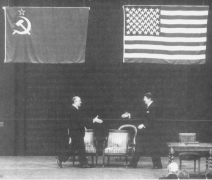

Mihail Gorbaçov ve Ronald Reagan, Cenevre, Kasım 1985
Soğuk Savaş, Amerika’nın barış dönemi beklediği bir zamanda başladı ve uzayıp giden bir anlaşmazlığa kendini hazırlarken son buldu. Sovyet imparatorluğu, sınırlarının gerisinde, patladığından daha ani bir şekilde çöktü. Amerika da aynı hızla, Rusya’ya karşı tavrını birkaç ay içinde düşmanlıktan dostluğa dönüştürdü.
Bu ani değişiklik, bir araya gelmesi olanaksız iki işbirlikçinin koruması altında gerçekleşti. Ronald Reagan, Amerika’nın farklılığı inancının geleneksel gerçeklerinin doğrulanması amacıyla, Amerika’nın görünüşte geri çekilmesi dönemine bir tepki olarak seçilmişti. En üst konuma, komünist hiyerarşisinde acımasız mücadelelerden sonra yükselmiş olan Gorbaçov, kendisine göre üstün Sovyet ideolojisini tekrar canlandırmaya kararlıydı. Reagan ve Gorbaçov, kendi taraflarının nihai zaferi kazanacağına inanıyordu. Ancak bu iki hiç beklenmeyen işbirlikçi arasında çok hayati bir fark vardı: Reagan toplumunun kaynaklarını iyi anlamıştı; Gorbaçov ise, kendi toplumunun kaynaklarıyla olan ilişkisini iyice yitirmişti. Her iki lider de, kendi sistemlerinde, en iyi olduğunu düşündükleri şeylere hitap ettiler. Reagan, halkının ruhunu, girişim ve kendine güven musluklarını açarak serbest bırakırken, Gorbaçov yapılması olanaksız olan reform isteyerek, temsil ettiği sistemin ölümünü çabuklaştırdı.
Amerika’da 1975’teki Çinhindi çöküntüsünü, Angola’dan çekilme ve iç bölünmelerin daha da derinleşmesi izlerken, Sovyetler Birliği’nin yayılmacılığında olağanüstü bir artış oldu. Küba askeri kuvvetleri, Angola’dan Etiyopya’ya kadar binlerce Sovyet savaş danışmanı ile birlikte dünyaya yayıldı. Kamboçya’da, Sovyetler Birliği tarafından desteklenen Vietnam birlikleri bu acı çeken ülkeyi boyunduruk altında tutuyordu. Afganistan, 100.000’den fazla Sovyet askeri tarafından işgal edilmişti. Batı yanlısı İran şahının hükümeti devrilmiş ve yerini anti-Amerikan köktenciler almıştı ve bunlar, hepsi devlet memuru olan elli iki kişiyi rehin almıştı. Sebep ne olursa olsun, domino taşları gerçekten de birer birer düşüyordu.
Ancak Amerika’nın uluslararası durumunun bu en aşağı düzeyde olduğu zamanda komünizm çözülmeye başladı. 1980’li yılların başlarında bir an, komünizmin hareket gücünün, önündeki her şeyi silip süpürecekmiş gibi geldi; tarihin zaman ölçüsü içinde bir an sonra, komünizm, kendi kendini yok ediyordu. On yıl içinde Doğu Avrupa uydu yörüngesi çözüldü, Sovyet imparatorluğu parçalandı ve Rusya Büyük Petro zamanından beri kazandığı hemen hemen her şeyi geri verdi. Hiçbir büyük dünya devleti, herhangi bir savaş kaybetmeden, bu kadar çabuk ve bu kadar kesin dağılmamıştı.
Sovyet İmparatorluğu’nun başarısızlığının nedeni, kısmen tarihinin onu, karşı konulmaz bir şekilde genişlemeye zorlamasıydı. Sovyet devleti bütün eşitsizliklere karşın kurulmuştu ve iç savaştan, izolasyondan ve kötü yöneticilerin elinden sağ kurtulmuştu. 1934-1941 arasında, bir karabasan gibi üzerine gelen İkinci Dünya Savaşı’nı, kendi deyimleriyle emperyalist bir iç savaşa dönüştürme becerisini göstermişti ve Batılı müttefiklerinin yardımı ile Nazi katliamının üstesinden gelmişti. Sonra, Amerikan atom tekeline karşın, Doğu Avrupa’da bir uydu yörüngesi kurmayı başarmış ve Stalin sonrası dönemde kendisini global bir süper güç yapmıştı. Sovyet orduları, ilk önce sınırlarına bitişik bölgeleri tehdit etmeye başladı; fakat sonra uzak kıtalara kadar uzandı. Sovyet füze gücü, o kadar büyük bir hızla büyüyordu ki, birçok Amerikalı uzman, Sovyetlerin stratejik üstünlüğünün yakın olduğundan korktular. XIX. yüzyıldaki İngiliz liderler Palmerston ve Disraeli gibi, Amerikalı devlet adamları da, Rusya’nın her yerde ilerleme halinde olduğunu düşünüyorlardı.
Bu şişirilmiş bir emperyalizm içindeki ölümcül çatlak, Sovyet liderlerinin orantı duygusunu tamamen kaybetmeleri, Sovyet sisteminin askeri ve ekonomik bakımdan kazançlarını özümseme yeteneğini olduğundan çok tahmin etmeleri ve bütün diğer büyük devletlere karşı çok zayıf bir tabana dayanarak meydan okuduklarını unutmalarıdır. Aynı zamanda, Sovyet liderleri, sistemlerinin, inisiyatif ve yaratıcılık oluşturma kapasitesinin tehlikeli bir şekilde yetersiz olduğunu kabul edemezlerdi; gerçekte Sovyetler Birliği, askeri gücüne karşın hâlâ son derece geri bir ülkeydi. Hayatta kalma sınavından başarıyla çıkamadılar; çünkü Sovyet Politbüro’sunun üyelerinin yüksek konuma gelmelerini sağlayan nitelikler, kışkırttıkları anlaşmazlıktan sürdürmek bir yana, toplumlarının büyümesi için gereksinim duyulan yaratıcılığı boğdu.
Basitçe, Sovyetler Birliği, liderlerinin ona yüklediği rolü kaldırabilecek ne güce, ne de dinamizme sahipti. Stalin, Kore Savaşı sırasında verdiği 1952 Barış Notası ile (Bkz. Bölüm 20) Amerikan askeri yığınağına tepki gösterdiğinde, gerçek güç dengesini sezinlemiş olabilir. Stalin’in ölümünü izleyen ümitsiz geçiş döneminde, yerine gelenler, Batı tarafından bir sorun yaratılmadan ayakta kalmalarını, Batı’nın bir zayıflığı olarak yanlış yorumladılar. Gelişen dünyada, dramatik Sovyet atılımları olarak değerlendirdikleri şeylerle de kendilerini kandırdılar. Kruşçev ve yerine gelenler, daha iyi bir diktatörlük yapabilecekleri kararına vardılar. Stalin’in temel stratejisi olan kapitalist dünyayı bölme yerine, onu Berlin ültimatomları, Küba’ya füze gönderme ve gelişmekte olan ülkelerde macera arama yolları ile yenmeye çalıştılar. Bu çabalar, Sovyet olanaklarını aşarak durgunluğu, çöküntüye dönüştürdü.
Komünizmin dağılması, Reagan’ın başkanlığının ikinci döneminde belirginleşmeye başladı ve Reagan’ın başkanlığı bittiğinde artık geri dönülmez bir aşamaya girmişti. Bu işin böyle gelişmesinde, Reagan’dan önceki başkanların ve Reagan’ın yerine gelen ve son aşamada başkanlık yapan George Bush’un katkısı büyüktür. Ancak dönüm noktasını işaretleyen Ronald Reagan’ın başkanlık dönemidir.
Reagan’ınki hayret verecek bir performanstı; akademik gözlemcilere göre ise, hemen hemen anlaşılmaz bir şeydi. Reagan’ın hiç tarih bilgisi yoktu ve bildiği kadar tarihi, inatçılıkla koruduğu önyargılarına destek olarak kullandı, İncil’deki kıyamet günü ile ilgili pasajları, olacakların tahmini olarak kabul etti. Anlatmaktan hoşlandığı birçok tarihi anekdotun aslı yoktu. Özel bir sohbette, Gorbaçov’u Bismarck’a benzetti, iddiasına göre, her ikisi de benzer iç engelleri, merkezden planlanmış ekonomiden serbest pazara doğru hareket ederek aşmıştı. Ortak bir dost vasıtasıyla, bu akıl almaz benzetmeyi, bir Alman muhatabına hiçbir zaman tekrarlamaması önerisinde bulundum. Ancak aradaki dost uyarıyı iletmenin akıllıca bir şey olmadığını düşündü, bu benzetmenin Reagan’ın kafasına daha da çok yerleşeceğinden korktu.
Dış politikanın detayları Reagan’ı sıkıyordu. Yatıştırma politikasının tehlikeli olduğu, komünizmin kötülükleri ve ülkesinin büyüklüğü hakkında birkaç temel fikri iyice benimsemişti; fakat mevcut sorunları üzerinde analiz yapmak becerebileceği bir şey değildi. Bütün bunlar, bir tarihte Kongre Kütüphanesinde tarihçilerden oluşan bir topluluğa kayıt dışı olduğunu düşünerek şunları söylememe neden oldu: “Reagan’la konuştuğumuz zaman insan kendi kendine şunu soruyor: Bu adamın başkan, hatta vali olması kimin aklına geldi? Siz tarihçiler, bu derece entelektüel olmayan bir adamın sekiz yıl Kaliforniya’ya ve hemen hemen yedi yıl da Washington’a nasıl olup da egemen olduğunu açıklamak zorundasınız.”
Medya, benim sözümün ilk bölümü üzerine hırslı bir şekilde saldırdı. Fakat bir tarihçi için sözün ikinci kısmı daha enteresandı. Her şeyden sonra, en yüzeysel düzeyde akademik formasyonu olan bir başkan, olağanüstü tutarlılıkta ve uygunlukta bir dış politika geliştirecekti. Reagan’ın yalnızca birkaç temel fikri vardı; fakat bu fikirler, aynı zamanda döneminin dış politikasının çekirdeğini oluşturan fikirlerdi. Bu durum göstermektedir ki, liderliğin kilit unsurları yön duygusu ve inançların kuvvetli olmasıdır. Reagan’ın dış politika üzerindeki konuşmalarını kimin hazırladığı sorusu, –hiçbir başkan kendi hazırlamaz– hemen hemen konu dışıdır. Reagan’ın konuşma yazarlarının elinde oyuncak olduğu fıkraları, genellikle konuşma yazarları tarafından desteklenen bir yanılsamadır. Her şeyden önce, Reagan kendisi konuşma yazarlarını seçmiştir ve onların kaleme aldığı konuşmaları olağanüstü bir inanç ve ikna gücü ile o okumuştur. Reagan’ı az çok tanıyan herkes onun kendi fikirlerini ifade ettiğine inanır ve Stratejik Savunma Girişimi gibi bazı sorunlarda ise, etrafındaki danışmanlarının çok ilerisine gitmiş olduğunu görür.
Başkanın, ulusal çapta seçilen tek yetkili olduğu Amerikan hükümet sisteminde dış politikadaki tutarlılık, eğer varsa, başkanlık açıklamalarından ortaya çıkar. Bunlar, dağınık ve inatçı bürokrasi için en etkili direktif hizmeti görür, halk ve Kongre tartışmalarının gündemini oluşturur. Reagan, çok tutarlı ve oldukça entelektüel güce sahip bir dış politika doktrini ortaya koydu. Amerikan motivasyonu ile birlikte olağanüstü bir sezgisel anlayışı vardı. Aynı zamanda, Sovyet sisteminin hemen çökebilecek kadar iğreti olduğunu çok iyi anlamıştı; kendi tutucu karargâhındaki uzmanlar bile karşıt fikirdeydiler.
Reagan’da, Amerikan halkını birleştirme konusunda esrarengiz bir yetenek vardı. Az görülen ölçüde hoş ve gerçekten sevimli bir kişiliği vardı. Hatta onun nutuklarında hedef aldığı kimseler dahi ona karşı kişisel bir düşmanlık duymuyorlardı.
Her ne kadar bana, başarısız 1976 başkan adaylığı kampanyasında vahşice saldırmış ise de, uzun süren bir kırgınlığı taşımayı olanaksız buldum. Ulusal Güvenlik danışmanı olarak yıllarca onu bilgilendirmiş isem de, şimdi saldırdığı politikalar hakkında herhangi bir karşı koyması ile karşılaşmadım. Her şey olup bittikten sonra, kampanya retoriğini değil, brifing oturumlarındaki sağduyulu ve iyi niyetli davranışlarını hatırlıyorum. 1973 Ortadoğu krizinde ona, İsrail’in kaybettiği uçakları karşılayabileceğimizi, fakat Arapların buna tepkisinin nasıl kontrol edileceğini bilmediğimi söyledim. Bana şöyle cevap verdi: “Niçin Arapların düşürdüklerini ileri sürdükleri bütün uçakların yerine yenisinin verileceğini söylemiyorsun?” Bu suretle, aşırı ölçüde şişirilmiş Arap propagandasını sahiplerine karşı kullanmış oluyordu.
Reagan’ın yumuşak ve yaldızlı görüntüsünün ardında, olağanüstü karmaşık bir karakter gizliydi. Aynı zamanda hem cana yakın, hem mesafeli, hem neşeli ve hem de yalnızdı. Kendisi ile başkaları arasındaki mesafeyi iyi huyluluğu ile kurardı. Herkese karşı eşit dostluk gösterince, herkesi aynı hikâyelerle eğlendirince, kimse ondan özel bir yakınlık istemeyecekti. Konuşmadan konuşmaya tekrar tekrar kullanılan fıkra deposu, bazı zayıflıklara karşı bir kalkan niteliğindeydi. Birçok aktör gibi Reagan da yalnız bir adamdı ve bencil olmakla beraber cana yakın bir kişiliği vardı. Reagan’a en yakın kişi olarak bilinen birisi, bana onun tanıdığı en dost ve aynı zamanda en uzak insan olduğunu söyledi.
Reagan’ın 1976 kampanyası retoriğine karşın, Nixon, Ford ve Reagan yönetimleri tarafından uluslararası çevrenin değerlendirilmesi arasında önemli bir kavramsal fark yoktu. Üçü de Sovyetlerin küresel saldırısına direnmeye karar vermişlerdi ve tarihin, demokrasilerin yanında olduğunu düşünüyorlardı. Ancak taktiklerinde ve her yönetimin politikalarını Amerikan halkına açıklama tarzında büyük farklılık vardı.
Vietnam Savaşı dolayısıyla içerdeki bölünmeden şok olan Nixon, barış adına yapılan ciddi çabaların halka gösterilmesini, Sovyetlerin daha fazla yayılmasını engellemek için ne tür bir çatışma gerekiyorsa onu yapmak için bir ön şart olarak kabul etti. Geri çekilmekten yorulmuş bir ülkeyi yöneten Reagan, Sovyetlere karşı direnmeyi çatışmacı bir üslupla açıkladı. Woodrow Wilson gibi Reagan da anladı ki, tarihi boyunca kendi farklılığına inanmış olan Amerikan halkı, nihai ilhamını jeopolitik analizlerden değil, tarihi ideallerden alacaktı. Bu anlamda, Woodrow Wilson, Theodore Roosevelt’e ne ifade ediyorsa, Reagan da Nixon’a aynı şeyi ifade ediyordu. Nixon, Roosevelt gibi uluslararası ilişkilerin işleyiş tarzını daha iyi anlamıştı; Reagan ise, Wilson gibi Amerikan ruhunu daha iyi kavramıştı.
Amerika’nın eşsiz moral konumu hakkında Reagan’ın söylediği her şey, bu yüzyılda hemen hemen her Amerikan başkanının bir vesileyle söylediği şeylerdir. Amerikan farklı olma inancının Reagan tarafından yorumlanmasındaki fark, Reagan’ın bunu günlük dış politika yönetiminde bir kılavuz olarak kullanacak şekilde yorumlamış olmasıdır. Reagan’dan öncekiler, Amerikan prensiplerini özel bir inisiyatife –örneğin Milletler Cemiyeti veya Marshall Planı- destek olarak kullanırken, Reagan onları komünizme karşı günlük mücadelenin silahları olarak harekete geçirdi. 22 Şubat 1983 tarihinde, Amerikan Lejyonu’na hitaben yaptığı konuşmada şöyle diyordu:
“Ebedi gerçekler ile Amerikalıların bugün hür dünyanın gerçeklerine karşı aziz tuttuğu değerleri bir araya getirmekle, Amerikan dış politikasında temelden yeni bir yönlendirmeyi başlatmış olduk; bu, bizim paha biçilmez değerdeki hür kurumlarımızın hiçbir utanç duymadan ve özür dilemeden açıklanmasına dayanan bir politikadır...”{1004}
Reagan, Carter Yönetimi’yle birlikte tanımladığı “suçluluk kompleksi”ni reddetti ve Amerika’nın geçmişini, övünerek “dünyada mevcut en büyük barış yanlısı güç”{1005} olarak savundu, ilk basın toplantısında, Sovyetler Birliği’ni, amaçlarını gerçekleştirmek için “her suçu işlemeye, yalan söylemeye, aldatmaya”{1006} hazır bir kanun dışı imparatorluk olarak nitelendirmiştir. Bu niteleme, 1983’te Sovyetler Birliği’nin “kötülük imparatorluğu” olarak tanımlanmasının habercisi ve bu tavır, kendinden önceki bütün başkanların yapmaktan kaçındığı doğrudan bir moral meydan okumaydı. Reagan, genel kabul gören diplomatik düşünce biçimini çiğnedi ve Amerikan erdemlerini kendi kendine üstlendiği bir görev olan Amerikan halkını Doğu-Batı ideolojik çatışmasının önemli olduğuna ve bazı uluslararası mücadelelerin, iktidarda kalma ve diplomasi değil, kazananlarla kaybedenler hakkında olduğuna inandırmak için basitleştirdi.
Reagan’ın ilk başkanlık dönemi retoriği, yumuşama devresinin resmi sonunu işaretledi. Amerika’nın amacı artık gerilimin azaltılması değil, mücadele ve yıkmaydı. Reagan, militan anti-komünist olmak sözünü vererek seçilmişti ve sözüne sadık kaldı. Çöküşü gittikçe hızlanan bir Sovyetler Birliği ile uğraşması nedeniyle şanslı bir konumda bulunan Reagan, çok göreceli olduğu gerekçesiyle Nixon’ın ulusal çıkarı vurgulamasını reddetti ve çok bozguncu olduğu gerekçesiyle de Carter’in çekingenliğini eleştirdi. Bunların yerine, Reagan sonucun tarihsel kaçınılmazlığı nedeniyle dayanılabilir hale gelen felaketli bir çatışma görüşü sundu. 1982 Haziran’ında Londra’daki Westminster Hall’de yaptığı bir konuşmada, kendisinin Sovyetler Birliği’ni nasıl algıladığını ortaya koydu:
“Şaşılacak bir şey ama, Karl Marx, bir anlamda haklıydı. Bugün büyük bir devrim krizine tanık oluyoruz. Burada ekonomik düzenin talepleri, doğrudan doğruya politik düzenin talepleri ile çatışma halinde. Fakat kriz, hür, Marksist olmayan Batı’da değil, Marksizm-Leninizm ülkesi Sovyetler Birliği’nde olmaktadır…
Gereğinden fazla merkezileştirilmiş, çok az veya hiçbir teşvik öğesi taşımayan Sovyet sistemi, yıllardan beri en iyi kaynaklarını, tahrip araçlarının yapımına akıtmaktadır. Askeri üretimin büyümesi ile birlikte ekonominin devamlı küçülmesi, Sovyet halkı üzerinde dayanılmaz ağırlıkta bir baskı yapmaktadır.
Burada gördüğümüz şey, artık ekonomik temele oturmayan politik bir yapı ve üretim güçleri politik güçler tarafından kösteklenen bir toplumdur.”{1007}
Nixon ve ben aynı şeyi on yıl önce söylediğimiz zaman, yumuşamayı eleştiren tutucuların eleştirileri yoğunlaşmıştı. Tutucular, tarihi evrimin yumuşama için ileri sürülmesine güvenmiyorlardı; çünkü komünistlerle görüşmenin moral silahsızlanmaya yol açacağından korkuyorlardı. Fakat, bir çatışma gereci olarak kaçınılmaz zafer kavramını çekici buldular.
Reagan, Sovyetler Birliği ile ilişkilerin, eğer nükleer kıyamet korkusunu karşı tarafın da hissetmesi sağlanırsa gelişeceğine inanıyordu. Devamlı yayılmanın tehlikesini Kremlin’e iyice anlatmaya kararlıydı. On yıl önce, Reagan’ın retoriği, iç karışıklıkları kontrolden çıkarır ve halâ kendine güvenen bir Sovyetler Birliği’yle çatışmaya götürebilirdi; on yıl sonra böyle bir şey modası geçmiş görünüyordu. 1980’li yılların şartları içinde, önceden hiç görülmemiş bir Doğu-Batı diyalogu için bir temel oluşturuldu.
Reagan’ın fikirlerinin, yerleşmiş ilkelerin doğruluğuna inanan kimselerin sert saldırısına uğraması kaçınılmazdı. 11 Nisan 1983 tarihli The New Republic gazetesinde “TRB” Reagan’ın Sovyetler Birliği’ni “kötülük imparatorluğu” olarak tanımlamasına büyük hiddet göstererek, bu deyim için “ilkel bir ifade ve felaket yanlısı bir sembolizm”{1008} sözünü kullandı; 10 Mart 1983 tarihli The New York Times da, Anthony Lewis de bu söz için “ilkel” deyimini kullandı.{1009} 1981’de Harvard Profesörü Stanley Hoffmann, Reagan’ın militan üslubunu “maçoluk” “yeni milliyetçilik” ve bir çeşit “köktenci tepki” olarak niteledi. Hoffmann’a göre, bu üslubun, ekonomik zayıflıkları Sovyetler Birliği’nden aşağı kalmadığı söylenen Amerika’nın da içinde bulunduğu bu karmaşık dünyaya vereceği bir şey yoktu.{1010}
Olaylar öyle gelişti ki, Reagan’ın sözleri, kritiklerin tahmin ettiği gibi önemli görüşmelerin yapılmasını engellemedi. Aksine, Reagan’ın ikinci başkanlık döneminde yapılan Doğu-Batı diyalogunun genişliği ve yoğunluğu, Nixon’ın yumuşama döneminden beri görülmemişti. Yalnız bu kez görüşmeler halk tarafından destekleniyor ve tutucular tarafından alkışlanıyordu.
Reagan’ın ideolojik çatışmaya yaklaşımı, Wilsonculuğun basitleştirilmiş bir versiyonu ise, bu mücadelenin çözülmesini algılaması da aynı derecede Amerikan ütopizminden köklerini alıyordu. Her ne kadar sorunu, iyi ile kötü arasında bir kavga çerçevesi içine sokmuşsa da, Reagan çatışmanın sonuna kadar devam edeceğini de söylemiyordu. Tipik Amerikan tarzına göre, komünist çatışmacılığının, doğuştan bir kötü niyete değil, bilgisizliğe; bilerek ve isteyerek bir düşmanlığa değil, yanlış anlamaya dayandığına inanıyordu. Bu sebepten, Reagan’ın görüşüne göre, çatışma, düşmanın değişmesiyle birlikte sona erecekti. 1981’de, hayatını hedef alan suikasttan sonraki nekahet devresinde, (sanki yetmiş beş yıllık komünist ideoloji, kişisel bir başvurma ile kaldırılabilirmiş gibi) Leonid Brejnev’e gönderdiği el yazısı mektubunda, Sovyetler Birliği’nin Birleşik Devletler’le ilgili kuşkularını gidermeğe çalıştı. Bu, II. Dünya Savaşı’nın sonunda Truman’ın Stalin’e verdiği güvencenin kelimesi kelimesine aynısıydı (Bkz. Bölüm 17):
“Genellikle... bizim emperyalist emeller beslediğimiz ve böylece sizin ve yeni kurulan devletlerin güvenliği için tehdit oluşturduğumuz söyleniyor. Böyle bir suçlamayı destekleyecek herhangi bir kanıt olmadığı gibi, aksine, Birleşik Devletler’in hiçbir tehlike olmadan bütün dünyayı egemenliği altına alması olasılığı varken, böyle yapmadığının sağlam delili ortadadır... Şunu da söyleyebilirim ki, Birleşik Devletler’in emperyalist olduğu, kendi isteklerini kuvvet kullanarak başka ülkelere zorla kabul ettirmeye çalıştığı yolundaki suçlamaların kesin olarak aslı yoktur...
Bay Başkan, sizin ve benim temsil ettiğimiz halklarımızın çok aziz bildiği amaçlarının gerçekleşmesine engel olan şeylerin ortadan kaldırılması ile ilgilenmemiz gerekmez mi?”{1011}
İnsan, Reagan’ın mektubunun yatıştırıcı tonu ve kendisinin karşı taraf nezdinde özel bir saygınlığa sahip olduğu varsayımı ile, Reagan’ın henüz birkaç hafta önce Sovyet liderlerinin her suçu işleyebilecekleri şeklindeki iddiasını nasıl uzlaştıracağını bilemiyor. Reagan, bu açık uyumsuzluğu açıklamak gereksinimini duymadı, belki de her iki varsayıma da samimi olarak inanıyordu: Sovyet hareket tarzının kötülüğü ile Sovyet liderlerini değişmeye ikna edilebileceği.
Böylece, 1982 Kasım’ında Brejnev’in ölümünden sonra, Reagan 11 Temmuz 1983’te onun yerine geçen Yuri Andropov’a da el yazısı ile bir not göndererek Amerika’nın saldırgan emeller beslemediğini yineledi.{1012} Kısa zamanda Andropov da ölüp hasta ve yaşlı Konstantin Çemenko (açıkça geçici bir atamaydı) onun yerine geçince, Reagan yayınlanmak için tutulan günlüğüne şunları yazdı:
“İçimde, onunla erkek erkeğe problemlerimizi konuşmak ve onu, Sovyetlerin, milletler ailesine katılması halinde bunda maddi yararı olacağına inandırmaya çalışmak arzusu var, vs.”{1013}
Altı ay sonra, 28 Eylül 1984’te Gromiko, Reagan Yönetimi sırasında ilk kez olarak Beyaz Saray’ı ziyaret etti. Reagan, tekrar günlüğüne, başlıca amacının, Sovyet liderlerinin Birleşik Devletler’e karşı duyduğu kuşkuları gidermek olduğunu not ediyor:
“Bana öyle geliyor ki, onlar bizim niyetlerimizden ve biz onların niyetlerinden bu kadar kuşku duyduğumuz sürece, silahların indirimi ile bir yere varamayız. İnanıyorum ki, onlar hakkında kötü niyetlerimiz olmadığını, ancak onların bizim hakkımızda kötü niyetleri olduğunu düşündüğümüzü onlara anlatmak için bir toplantı yapmamız gereği vardır.”{1014}
Sovyetlerin hareket tarzının nedeni, iki kuşaktan beri onların Birleşik Devletler’den kuşku duymaları idiyse, Reagan bu duygunun Sovyet sisteminde ve tarihinde kök salmış olduğunu da kabul edebilirdi. Sovyet şüpheciliğinin dışişleri bakanı (sonuçta o da komünist yönetimin temsilcisidir) ile bir tek görüşmeden sonra ortadan kaldırılabileceği şeklindeki bu sıcak ümit (özellikle de anti-komünistliğini bu kadar açık söyleyen birinde), ancak halklar arasında birbirini anlamanın normal, gerginliğin sapma olduğunu kabul eden ve güvenin gayretli iyi niyet gösterileri ile sağlanabileceğini savunan yok edilemez Amerikan inancı ile açıklanabilir.
Olaylar öyle gelişti ki, komünizmin kamçısı olan Reagan, 1985’te Gorbaçov’la ilk buluşmalarından önceki geceyi ve iki kuşaktır devam eden anlaşmazlığın bir buluşma ile çözümleneceği ümidi içinde sinirli bekleyişini anlatırken hiçbir gariplik duymuyordu. Böyle bir tutum, Richard Nixon’ınkinden çok, Jimmy Carter’inkine daha yakındı:
“Brejnev’den başlamak üzere Sovyet liderleri ile hep şahsen teke tek görüşmeyi hayal etmişimdir. Çünkü ülkelerimizin diplomatlarının yetkilerinin olmaması nedeniyle yapamadığını biz yapabiliriz diye düşünmüşümdür. Yani öyle hissediyorum ki, bir zirvede görüşme yapmak ve konuşmak için en yüksek düzeyde adamları topladıktan sonra, siz ikiniz kol kola verip ‘biz şunun üzerinde anlaştık’ derseniz bürokratlar bu anlaşmayı bozamazlar. Gorbaçov’a kadar, bu fikrimi deneyebilecek bir fırsatı hiç bulamadım. Şimdi fırsat doğdu.”{1015}
İdeolojik mücadele ve jeopolitik bir anlaşmazlığı yürütme gerçeği hakkındaki retoriğine karşın, Reagan yapısal veya jeopolitik nedenlerle gerginlik olabileceğine kalben inanmıyordu. O ve arkadaşları, güç dengesi ile ilgilenmeyi çok sınırlandırıcı ve çok karamsar buluyorlardı. Yavaş yavaş ilerleme değil, nihai bir sonuç için çaba harcıyorlardı. Bu inanç, Reagan’ın takımına olağanüstü taktik bir esneklik verdi.
Bir biyografi, yazan Reagan’ın benim de kendi ağzından duyduğum “rüyalarından” biri hakkında şöyle yazıyordu:
“Başkan olarak Ronald Reagan’ın fantezilerinden biri, Mihail Gorbaçov’u Birleşik Devletler’de bir seyahat çıkarıp Sovyet liderinin orta halli Amerikalıların nasıl yaşadıklarını görmesini sağlamaktı. Reagan sık sık bundan bahsederdi. Kendisinin ve Gorbaçov’un bir helikopterle, emeği ile geçinen bir toplum kesiminin yerleşim yeri üzerinde uçmayı, fabrikalarını ve arabalarla dolu park yerini ve fabrika işçilerinin yaşadığı mahalleleri ‘çimleri, arka bahçeleri, park yerinde bir, belki de ikinci arabaları veya tekneleri’, ‘Moskova’da gördüğüm beton tavşan yuvalarına benzemeyen’ evlerini göstermeyi düşlerdi. Helikopter inecek ve Reagan Gorbaçov’u kapıları çalmaya ve ev sakinlerine ‘bizim sistemimiz hakkında ne düşündüğünü’ sormaya davet edecekti. İşçiler ona, Amerika ‘da yaşamanın ne kadar harika bir şey olduğunu söyleyecekti.“{1016}
Reagan açıkça, Gorbaçov’un veya diğer herhangi bir Sovyet liderlerinin kaçınılmaz olan komünist felsefenin yanlışlığını anlamalarını hızlandırmak görevi olduğuna inanıyordu. Amerika’nın gerçek doğası hakkında Sovyet yanlış algılamasını düzelttikten sonra, uzlaşma dönemi hızla bunu izleyecekti. Bu anlamda ve bütün ideolojik heyecanına karşın, Reagan’ın uluslararası çatışmanın esasına ilişkin görüşleri tamamen ütopik Amerikandı. Uzlaştırlamaz ulusal çıkarlara inanmayan Reagan, devletler arasında çözülemez anlaşmazlıklar olduğuna da inanmıyordu. Sovyet liderler ideolojik görüşlerini değiştirince, dünya klasik diplomasinin işi olan çatışmalardan kurtulacaktı. Devamlı çatışmayla nihai uzlaşma arasında bir ara devre olduğuna da inanmıyordu.
Ancak ne kadar iyimser, hatta “liberal” olursa olsun, Reagan’ın görüşleri nihai sonuca ilişkindi; amansız bir çatışmayla amacına ulaşmak istiyordu. Reagan’ın düşünce tarzına göre, Soğuk Savaş’ı sona erdirme çabası “uygun” bir atmosfer yaratmayı veya devamlı görüşme taraftarlarının çok sevdiği tek taraflı davranışlar sergilemeyi gerektirmezdi. Çatışma ve uzlaşmaya, politikanın birbirini izleyen aşamaları olarak bakacak kadar Amerikalı olan Reagan, ideolojik ve jeostratejik saldırıyı aynı zamanda benimseyen ilk savaş sonrası başkanı idi.
Sovyetler Birliği, John Poster Dulles döneminden beri böyle bir durumla uğraşmak zorunda kalmamıştı. Dulles da başkan olmadığı gibi, kendi “kurtarma” politikasını uygulamak için ciddi bir girişimde de bulunmamıştı. Tersine, Reagan ve arkadaşları, görevlerini şeklen de olsa harfi harfine uygulamak kararındaydılar. Reagan’ın yemin ederek işe başlamasından itibaren, aynı zamanda iki hedefin gerçekleştirilmesi peşinde oldular: Yayılma süreci durdurulana ve sonra ters çevrilene kadar Sovyet jepolitik baskısı ile savaşmak. İkinci olarak, Sovyetlerin stratejik üstünlük çabasını yerinde durduracak ve stratejik zarar görmeye açık olmaya çevirecek şekilde bir silahlanma programı başlatmak.
Rollerin değişmesi için ideolojik araç, yine insan hakları sorunuydu ve Reagan ve danışmanları, bununla Sovyet sisteminin altını oymak istiyorlardı. Kendinden önceki başkanlar da insan haklarının önemini doğrulamışlardı. Nixon, Sovyetler Birliği’nden göç sorununda aynı şekilde hareket etmişti. Ford, Helsinki Anlaşması’nın III. Sepet’iyle ileriye doğru en büyük adımı atmıştı (Bkz. Bölüm 27). Carter, insan haklarını dış politikasının merkezi yapmıştı ve Amerika’nın müttefikleri ile karşılıklı olarak o derecede yoğun bir şekilde desteklemişti ki, bu zaman zaman onların iç birliğini tehdit etmişti. Reagan ve danışmanları, komünizmi devirmek, Sovyetler Birliği’ni demokratikleştirmek için insan haklarını bir araç olarak kullanmak ve böylece barış içindeki bir dünyanın anahtarı konumuna getirmek amacıyla bir adım daha ileri gittiler. 25 Ocak 1984’te Reagan, Ulusa Sesleniş konuşmasında şöyle dedi: “Yönetilenlerin rızasına dayanan hükümetler, komşularına karşı savaş yapmazlar.”{1017} 1982’de Wesminster’de, dünyadaki demokrasi dalgasını överek özgür ülkelere şu çağrıda bulundu:
“...halkın kendi yolunu seçmesine, kendi kültürünü geliştirmesine, barışçı araçlarla farklı düşünceleri uzlaştırmasına izin veren araçlar olarak demokrasinin altyapısını, hür basın sistemini, sendikaları, politik partileri ve üniversiteleri desteklemek.”{1018}
Ülke içinde demokrasinin geliştirilmesi çağrısı, klasik bir Wilson temasının başlangıcıdır: “Bu yüzyılın geri kalan kısmı, özgürlük ve demokratik ideallerin yavaş yavaş büyümesine tanık olacaksa, demokrasi kampanyasına yardım etmek amacıyla harekete geçmeliyiz.”{1019}
Gerçekten de Reagan, Wilsonculuğu sonucuna kadar götürdü. Amerika oturup, hür kurumların kendi kendilerine oluşmasını bekleyemezdi; aynı zamanda sadece kendi güvenliğine karşı doğrudan doğruya tehditlere karşı direnmekle de kalamazdı. Onun yerine, aktif bir şekilde demokrasiyi teşvik etmesi, ideallerine uyan ülkeleri ödüllendirmesi, uymayanlara Amerika’ya karşı tehdit oluştursun oluşturmasın cezalandırması gerekirdi. Reagan’ın takımı, böylece ilk Bolşeviklerin iddialarını tersine çevirdi: Komünist Manifesto değil, demokratik değerler, geleceğin akımı olacaktı. Ayrıca, Reagan’ın takımı tutarlıydı: Hem Şili’deki tutucu Pinochet rejimine, hem de Filipinler’deki otoriter Marcos rejimine reform yapmaları için baskı uyguladı. Şili referandum ve hür seçimler yapmaya ikna edildi ve böylece iktidardan düştü; Marcos da Amerikan işbirliği ile devrildi.
Aynı zamanda demokrasi için açılan bu kampanya, Soğuk Savaş sonrası dönemle özel ilgisi olan temel sorunları da beraberinde getirdi: Devlet bu kampanya ile diğer devletlerin içişlerine karışmama şeklindeki Amerika’nın uzun zamandan beri önem verdiği doktrini nasıl uzlaştıracaktı? Ne dereceye kadar ulusal güvenlik gibi hedefler, ikinci planda tutulacaktı? Amerika değerlerini desteklemek için hangi bedeli ödemeye hazırdı? Yayılmacılık ve toprak ilhaklarından nasıl kaçınılacaktı? İlk Reaganlı yılları uzak bir tarihmiş gibi gösteren Soğuk Savaş sonrası dünya, bu sorulara bir cevap bulmak zorunda idi.
Ancak Reagan başkanlığa geldiği zaman böyle belirsizlikler, onu, Sovyetlerin önceki yıllardaki pervasız yayılmasını durdurmak için bir strateji geliştirmekten daha çok kaygılandırmadı. Reagan’ın jeostratejik saldırısının amacı, Sovyetlere haddini aştığını iyice anlatmaktı. Brejnev’in, komünist kazançlarının geri çevrilemez olduğunu savunan doktrinini reddeden Reagan’ın stratejisi, komünizmin yalnızca sınırlandırılabileceğine değil, yenilebileceğine de inanıyordu. Reagan, Angola’daki komünist karşıtı gerillalara Amerikan yardımını engelleyen Clark Değişiklik Kanunu’nu yürürlükten kaldırdı. Sovyet karşıtı Afgan gerillalara desteği büyük çapta artırdı. Orta Amerika’daki komünist gerillalara karşı direnmek için büyük bir program geliştirdi ve hatta Kamboçya’ya insani yardımı genişletti. Çinhindi’ndeki kötü yenilgiden beş yıldan biraz fazla bir zaman sonra, kararlı bir başkanın, Sovyet genişlemesine bu kez başarılı bir şekilde karşı durması Amerika’nın birliği için önemli bir zaferdi.
Bunların bazıları Bush yönetimine kadar gerçekleştirilemediyse de, 1970’li yılların Sovyet kazançlarının çoğu geri alındı. 1990’da Kamboçya’daki Vietnam işgaline son verildi. 1993’te seçimler yapıldı ve mülteciler yurtlarına geri dönmeye hazırlandılar; 1991’de Küba birlikleri Angola’dan çekildiler; Etiyopya’daki komünistler tarafından desteklenen hükümet 1991’de çöktü; 1990’da Nikaragua’daki Sandinistaslar serbest seçimlere razı edildiler ki, bu hiçbir iktidardaki komünist partisinin göze alamadığı bir tehlike idi; en önemlisi, Sovyet orduları 1989’da Afganistan’dan geri çekildi. Bütün bu gelişmeler, komünizmin ideolojik atılımının ve jeopolitik inançlarının kırılmasına yardımcı oldu. Üçüncü Dünya denilen ülkelerde Sovyet etkisinin çöktüğünü gören Sovyet reformcuları, Brejnev’in yüksek maliyetli, faydasız serüvenlerini, komünist sistemin iflasının nedeni olarak göstererek, onun anti-demokratik karar alma tarzının acele bir revizyon gerektirdiğine inandıklarını söylediler.{1020}
Reagan Yönetimi, bu başarıları Reagan Doktrini denen prensibi yürürlüğe koyarak kazandı: Birleşik Devletler, Sovyet nüfuz alanı dışındaki ülkelerde anti-komünist karşı ayaklanmalara yardım edecekti. Bu, Afgan mücahitlerini Ruslara karşı savaşlarında silahlandırmak, Nikaragua’da kontra gerillalarına destek vermek, Etiyopya’da ve Angola’daki komünist karşıtı güçlere yardım etmek demekti. 1960 ve 1970’li yıllarda Sovyetler, hükümetleri, Birleşik Devletler’e karşı dost olan ülkelerde komünist ayaklanmaları teşvik etmişti. Şimdi 1980’li yıllarda, Amerika Sovyetlere kendi kullandığı ilaçları tattırmak istiyordu. Dışişleri Bakanı Shultz, bu kavramı 1985 Şubat’ında San Francisco’da yaptığı bir konuşmada şöyle açıkladı:
“Yıllarca, komünist diktatörlükleri yaymak isteyen düşmanlarımız, herhangi bir sakınmaya gerek görmeksizin dünyanın birçok yerinde yapılan ayaklanmalara destek olmuştur... Komünizmin herhangi bir zaferinin geri çevrilemez olduğunu sanmışlardır. Bugün, Sovyet imparatorluğu kendi iç problemlerinin ve karışık dış ilişkilerinin baskısı altında zayıflamaktadır... Dünyadaki demokratik güçler, desteğimizi hak etmektedirler. Onları terk etmek, utanç verici bir ihanet olur; yalnızca bu cesur erkekleri ve kadınları terk etmek değil, aynı zamanda en yüksek ideallerimizi de terk etmek anlamına gelir.”{1021}
Küresel olarak özgürlük ve demokrasinin desteklenmesinde kullanılan yüksek Wilson dili, hemen hemen Makyavelci gerçeklikle mayalandı. Amerika, Quincy Adams’ın sözleriyle “yok etmek için yurtdışında canavar avına” çıkmadı; daha çok, Reagan Doktrini’ne göre düşmanın düşmanına yardım için çıktı ki, bunu Richelieu bütün kalbiyle desteklerdi. Reagan Yönetimi yalnızca gerçek demokratlara değil (Polonya’da olduğu gibi), fakat Afganistan’daki İslamcı köktencilere (İranlılarla ortak), Orta Amerika’daki sağcılara ve Afrika’daki kabile savaşçılarına kadar yardım yaptı. Birleşik Devletler’in Afganistan’daki mücahitlerle, Richelieu’nün Osmanlı imparatorluğu sultanı ile olduğundan daha fazla ortak bir şeyi yoktu. Ancak ortak bir düşmanları vardı ve ulusal çıkar dünyasında bu durum onları müttefik yaptı. Sonuçlar komünizmin çöküşünü hızlandırdı; fakat Amerika’yı tarihi boyunca kaçındığı ve bir devlet adamının başlıca çıkmazı olan temel bir soruyla yüz yüze getirdi: Hangi sonuçlar hangi araçları meşru kılar?
Reagan’ın Sovyetler Birliği’ne karşı en önemli meydan okuması askeri bakımdan kuvvetlenmeydi. Bütün seçim kampanyalarında, Reagan Amerikan savunma çabalarının yetersiz olduğundan yakınmış ve yaklaşmakta olan Sovyet üstünlüğü uyarısında bulunmuştu. Bugün biz bu korkuların, Atom Çağı’nda askeri üstünlüğün doğasının gereğinden fazla basitleştirilmesinin bir sonucu olduğunu biliyoruz. Fakat Reagan’ın Sovyet askeri tehdidini algılamadaki isabet derecesi ne olursa olsun, bu anlayış, tutucu seçmenlerin desteğini Nixon’ın jeopolitik tehlike kavramının yaptığından daha iyi sağladı.
Reagan Yönetimi’nden önce, Amerika’nın Soğuk Savaş politikasını eleştirenlerin standart argümanı, silah yığınağı yapılmasının anlamsız olduğu, çünkü Sovyetlerin daima ve her seviyede Amerikan çabasına cevap vereceği ve eşitliği sağlayacağı idi. Bunun, yakın Sovyet üstünlüğü algılamasından da isabetsiz olduğu anlaşıldı. Reagan dönemindeki Amerikan silah yığınağının derecesi ve hızı, Afganistan’da ve Afrika’daki büyük yenilgiler sonucunda, Sovyet liderliğinin kafasında var olan silahlanma yarışını, ekonomik ve daha önemlisi teknik bakımdan kaldırıp kaldırmayacakları kuşkusunu daha da kuvvetlendirdi.
Reagan, B-1 bombardıman uçaklarının yapılması, on yıldan beri ilk Amerikan kıtalar arası füzeleri olan MX füzelerinin konuşlandırılmasının başlatılması gibi Carter zamanında terk edilen silah sistemlerini yeniden canlandırdı. Soğuk Savaş’ın sona erdirilmesinde en büyük katkısı olan iki stratejik karar, NATO’nun orta menzilli Amerikan füzelerini Avrupa’da konuşlandırması ve Stratejik Savunma Girişimi’nin başlatılmasıydı.
Orta menzilli (1.500 mil) füzelerin Avrupa’da konuşlandırılması hakkındaki NATO karan, Carter Yönetimi’nde alınmıştır. Amacı, Amerika’nın nötron bombasını tek taraflı olarak iptal etme kararı dolayısıyla çok kızan Batı Alman Başbakanı Helmut Schmidt’i yatıştırmaktı. Nükleer savaşı daha az tahrip edici hale getirmek için icat edilen nötron bombasını, Schmidt kendi Sosyal Demokrat Partisi’nin karşı koymasına rağmen desteklemişti. Orta menzilli silahlar (kısmen balistik füzeler, kısmen karadan atılan Cruise füzeleri) farklı bir problem için icat edilmişti. Amaç, Sovyet topraklarının derinliklerinde konuşlandırılmış ve bütün Avrupa hedeflerini vurabilecek kapasitedeki çok sayıda yeni Sovyet füzesine (SS-20) karşı kullanmaktı.
Özünde orta menzilli silahlar lehine olan argüman, stratejik değil, politikti ve yirmi yıl önce strateji hakkında müttefikler arasında tartışma çıkaran aynı endişeden doğmuştu. Ancak bu kez Amerika Avrupa’nın korkularını yatıştırmaya çalıştı. Açıkça söylemek gerekirse, bu sorun, bir kez daha Batı Avrupa’nın Avrupa’ya yönelik bir Sovyet saldırısını nükleer silah kullanmak suretiyle püskürteceği konusunda Birleşik Devletler’e güvenip güvenemeyeceği sorunuydu. Müttefikleri, Amerika’nın kendi ülkesinde veya denizde üslenmiş silahları ile nükleer bir misillemeye başvurmaya istekli olduğuna gerçekten inansalar, Avrupa topraklarında yeni füzelere gerek kalmayacaktı. Fakat Avrupa liderlerinin devamlı kuşku duydukları husus, Amerika’nın bunu yapıp yapmayacağıydı. Amerikan liderlerinin de Avrupa’nın bu konudaki endişelerine cevap vermekte kendi nedenleri vardı. Bu, Amerika’ya yönelik genel bir savaş ile Sovyet nükleer şantajına boyun eğme arasında seçenek yaratan esnek karşılık stratejisinin bir parçasıydı.
Kuşkusuz, Atlantik ortaklığının her iki tarafı arasında karşılıklı olarak bir bilinçaltına yerleşmiş güvensizliğin daha sofistike bir açıklaması vardı. Bu da, yeni silahların, Avrupa’nın stratejik savunması ile Amerika’nınkini birbirine organik olarak bağlamasıydı. Bu argümana göre, Sovyetler Birliği ilk önce Avrupa’daki orta menzilli füzeleri yok etmeden konvansiyonel silahlarla saldırıya geçemezdi. Çünkü bu silahlar yakınlığı ve hedefi vurma oranının yükseldiği nedeniyle Sovyet kumanda merkezlerini vurabilir ve Amerikan stratejik kuvvetlerinin ilk öldürücü darbesi için yolu açabilirdi. Diğer taraftan, Amerikan misilleme gücünü olduğu gibi bırakarak Amerikan orta menzilli füzelerine saldırmak da çok tehlikeli bir şeydi. Büyük zarar verebilecek yeterli sayıda orta menzilli füze sağlam kalabilir ve zarar görmemiş Amerikan misilleme kuvvetlerini savaşın sonucunu belirleyecek duruma getirebilirdi. Böylece orta menzilli füzeler caydırmada var olan bir boşluğu dolduruyordu. Zamanın teknik jargonuyla, bundan böyle Avrupa’nın savunması ile Amerika’nın savunması “birbiriyle bağlantılı” idi: Sovyetler Birliği toptan bir atom savaşı riskini göze almadan Avrupa veya Amerika’ya saldırıda bulunamayacaktı.
Teknik “bağlantı”, Avrupa’nın geri kalan bölümünde, özellikle Fransa’da gittikçe artan Alman tarafsızlığı korkusuna da cevap veriyordu. 1982’de Schmidt’in düşmesinden sonra, Alman Sosyal Demokrat Partisi milliyetçiliğe ve tarafsızlığa döner gibi oldu. O kadar ki, 1986 seçimlerinde partinin liderliğinden olan Oscar LaFontaine, Almanya’nın bütünleşmiş NATO kumandanlığından çıkmasını istedi. Füzelerin konuşlandırılması aleyhinde yapılan büyük gösteriler Federal Cumhuriyeti sarstı.
Almanya’nın NATO ile bağlarını zayıflatmak fırsatını hisseden Brejnev ve yerine gelen Andropov, orta menzilli füzelerin konuşlandırılmasına muhalefet etmeyi Sovyet dış politikasının esas teması haline getirdi. 1983’ün başlarında, Gromiko, Bonn’u ziyaret ederek, Pershing füzelerinin Almanya’ya geldiği gün, Sovyetlerin Cenevre silahların kontrolü görüşmelerini terk edeceği uyarısında bulundu. Bu söz, açıkça Alman protestocularını ateşlemek için söylenmişti. Kohl 1983 Temmuz’unda Kremlin’i ziyaret ettiği zaman, Andropov Alman başbakanına Pershing II’leri kabul etmesi durumunda şu uyarıda bulunmuştu:
“Batı Almanya için askeri tehdit, katlanarak büyüyecektir. Ülkelerimiz arasındaki ilişkilerde bazı zorluklar kaçınılmaz olacaktır. Federal Alman Cumhuriyeti ile Demokratik Alman Cumhuriyeti’nde yaşayan Almanlara gelince, birinin yakın zamanda dediği gibi (Pravda) birbirlerine, füzelerden oluşan parmaklıklar arkasından bakacaklardır.”{1022}
Moskova’nın propaganda makinesi Avrupa ülkelerinde büyük bir kampanya başlattı. Birçok barış grubu tarafından yapılan büyük kitle gösterilerinde, yeni füze konuşlandırılmasından çok silahsızlanmaya öncelik verilmesi ve ayrıca nükleer silahların derhal dondurulması istendi.
Almanya’nın tarafsızlığa her yönelişinde, (Fransızlara göre bu milliyetçilik demekti) Fransız cumhurbaşkanları, Bonn’a Avrupa veya Atlantik alternatifleri sunmaya giriştiler. 1960’lı yıllarda, de Gaulle Almanya’nın Berlin konusundaki görüşünün yılmaz savunucusuydu. 1983’te, Mitterand beklenmedik bir şekilde Amerika’nın orta menzilli füzelerini konuşlandırılması planının en büyük Avrupalı destekçisi olmuştur. Mitterand Almanya’ya füzelerin yerleştirilmesi için bir kampanya başlattı. “Avrupa kıtasının Amerika ile bağlantısı üzerinde kumar oynayan birisi, bizim görüşümüze göre kuvvet dengesini ve barışın korunmasını tehlikeye sokuyor demektir.” Bu sözü Mitterand Alman Bundestag’ında söylemiştir.{1023} Fransız cumhurbaşkanı için orta menzilli füzelerin Almanya’da konuşlandmlmasındaki Fransız ulusal çıkan, Fransız Sosyalistlerinin Alman Sosyal Demokrat kardeşlerine karşı hissettikleri ideolojik yakınlıktan daha üstün gelmektedir.
Reagan, Sovyet diplomatik saldırısının önünü almak için bir hile icat etti: Amerikan orta menzilli füzelerine karşılık Sovyet SS-20’lerini önerdi.{1024} SS-20’ler Amerikan konuşlandırması için daha çok bir bahane olduğundan, öneri Avrupa’nın savunmasını Amerika’nınki ile “birbirine bağlamak” konusunda ciddi sorunlar ortaya çıkardı, iki savunma arasındaki “bağlantı” hakkındaki tartışmalar anlaşılmaz bir duruma gelirken, bütün bu kategori içinde kalan silahların kaldırılması önerisi, anlaşılması kolay bir şeydi. Sovyetler pazarlık şanslarını olduğundan fazla tahmin ettiler ve Reagan’ın önerisini tartışmayı bile kabul etmediler; böylece sıfır seçeneği Avrupa hükümetlerinin füzeleri konuşlandırma çalışmalarını kolaylaştırdı. Bu Reagan ve Amerikan planını cesaretle savunan Alman Başbakanı Helmut Kohl için herkesi hayrete düşüren bir zaferdi. Bu olay şunu da gösterdi ki, zayıf Sovyet liderliği, Batı Avrupa’nın gözünü korkutma kapasitesini yitiriyordu.
Orta menzilli füzelerin konuşlandırılması caydırma stratejisini de geliştirdi; fakat 23 Mart 1983’te Reagan Sovyet füzelerine karşı bir stratejik savunma geliştirmek niyetini açıklayınca, gerçekten de bir stratejik hamle yapmış oldu:
“... Ülkemizde bize atom silahlarını veren bilim topluluğuna, şimdi bütün yeteneklerini insanlık ve dünya barışı uğruna kullanmaları çağrısında bulunuyorum: Bize bu nükleer silahları etkisiz ve modası geçmiş hale getirecek bir şey verin.”{1025}
Son kelimeler olan “etkisiz ve modası geçmiş” kelimeleri, Kremlin’i ürpertmiş olmalıdır. Sovyet atom silahları, Sovyetler Birliği’nin süper güç statüsünün kilit taşıydı. Brejnev döneminin başlıca hedefi, yirmi yılı boyunca, Birleşik Devletler’le stratejik eşitliği sağlamaktı. Şimdi, bir küçük teknik darbe ile Reagan, Sovyetler Birliği’nin elde etmek için iflası göze aldığı her şeyi bir çırpıda silip atmayı öneriyordu.
Reagan’ın yüzde yüz etkili savunma silahını gerçekleştirme aşamasına yaklaşması bile, Amerikan stratejik üstünlüğünün gerçek olması anlamına geliyordu. Amerika’nın ilk darbesi başarılı olabilirdi; çünkü savunma sistemi, Sovyet füze gücünün ayakta kalmış olan nispeten küçük ve disorganize bölümünü engelleyebilirdi. En azından, Reagan’ın SDI (Stratejik Savunma Girişimi) ilanı Sovyet liderlerinin dikkatini şu noktaya çekti: 1960’lı yıllarda amansız bir şekilde başlattıktan silah yarışı, şimdi ya kaynaklarını tamamen tüketecek veya bir Amerikan stratejik hamlesine yol açacaktı.
Reagan’ın SDI önerisi, Amerikan savunma politikası tartışmasında hassas bir yaraya dokundu. Atom Çağı’ndan önce, bir ülkenin savunmasını, halkının tehlikeye açıklığı üzerine dayandırması, akıl almaz bir şey olarak düşünülürdü. Sonradan stratejik tartışma yeni bir özellik kazandı; çünkü büyük bölümü tamamen yeni bir grup katılımcı tarafından yönetilir oldu. Nükleer Çağ’dan önce, askeri strateji, ya kurmay subaylar tarafından tartışılarak kararlaştırılır veya askeri kurmay kolejinde, çoğu B.H. Liddell Hart gibi askeri tarihçi olan kimselerin dışardan katılımıyla belirlenirdi. Nükleer silahların geniş tahrip kapasitesi, geleneksel askeri uzmanlığı faydasız hale getirdi; yeni teknolojiden anlayan herkes oynayabilirdi ve oyuncular çoğunlukla bilim adamı ve birkaç da akademisyenden oluşuyordu.
Teknik uzmanların çoğunluğu, serbest bırakılan tahrip kapasitesinin büyüklüğü karşısında dehşete düştüler ve politikacıların bu konuda yeter derecede sorumluluk taşımadıklarına ikna olarak, kendilerinde politikacıların nükleer savaşı daha kabul edilebilir hale getirecek en az düzeyde bir şans dahi görürlerse, bunu kullanmaya girişebileceklerini düşündüler. Bu nedenle, en pervasız politika üreticilerini bile korkutacak derecede felaket taşıyan stratejileri savunmak bilim adamlarının moral göreviydi. Bu yaklaşımın paradoksu, kendilerini doğru olarak uygarlığın geleceği ile en çok ilgilenen kişiler olarak görenlerin, sivil halkın imhasını öngören nihilist bir askeri stratejiyi savunmalarıydı.
Savunma alanında çalışan bilim adamları bu görüşe yavaş yavaş geldiler. Nükleer çağın ilk on yılında, çoğu henüz mevcut olmayan Sovyet hava tehdidine karşı savunmayı ısrarla istiyorlardı. Bir atom savaşını önlemeyi kendilerine görev edinmiş bilim adamlarının kafalarının gerisinde, kuşkusuz kaynakların saldırı silahları için kullanılmasını önlemenin ve böylece bir Amerikan sürpriz saldırısını cazip kılan şeyleri azaltmanın faydalı olduğu fikri vardı. Sovyetlerin bütün Birleşik Devletler’i yerle bir edecek yeterli nükleer kapasitesinin her gün daha da büyüdüğünü gören bilimsel toplumun yaygın görüşü, paradoksal bir şekilde değişti. Bundan böyle, çoğunluk, Karşılıklı Yok Olma Doktrini’ni şevkle savunuyordu. Bu doktrin, beklenen sivil kayıpların çok yüksek bir düzeyde olacağı varsayımına dayanan caydırıcı bir sistemdi ve bu düzey nedeniyle hiçbir tarafın nükleer bir savaşı başlatamayacağı varsayılıyordu.
Karşılıklı Yok Olma Doktrini, stratejik teoride, savunmayı, intihar tehdidine dayandırarak mantıklı olmaktan bilerek kaçışa işaret etmektedir. Pratikte bu teori, karşı tarafın genel bir nükleer savaşa başvurmadan karşı koyamayacağı sorunlar yaratabilen tarafa psikolojik yönden büyük bir avantaj sağlamıştır. 1960 ve 1970’li yıllarda bu taraf, açıkça konvansiyonel askeri kapasitesinin Batı’nınkilere göre üstün olduğu kabul edilen Sovyetler Birliği’ydi. Aynı zamanda, böyle bir strateji, bir nükleer savaşın bütün uygarlığı yok etmesini de kesinleştiriyordu. Böylece SDI, tam teslimiyet ile kıyamet günü arasında hoşlanılmayan bir seçim yapmaktan kaçınmak isteyen kişiler arasında taraftar buldu.
Ancak medya ve savunma konulan ile ilgilenen entelektüeller, genellikle kabul edilen yolu seçerek SDl’ye karşı çıktılar. Çeşitli karşı çıkış nedenlerinin en iyi ve en dürüst özeti, Carter Yönetimi’nde savunma bakanı ve Johnson Yönetimi’nde Hava Kuvvetleri bakanı olan Harold Brown tarafından bir kitapta toplanmıştır.{1026} Brown bir inceleme yapılmasını istiyor ve SDI’in henüz uygulanabilir olmadığını ileri sürüyordu.{1027} Onunla çalışanlardan biri, Richard Betts, Sovyetlerin savunma sisteminin, herhangi bir konuşlandırma düzeyinde Amerika’nınkinden daha düşük bir maliyette olduğunu savundu.{1028} Johns Hopkins Üniversitesi’nden Prof. George Liska karşı görüşü benimsedi. SDI’in çalışabileceğini, fakat bir kez korunduktan sonra Amerika’nın Avrupalı müttefiklerini savunması için bir neden kalmayacağını söyledi.{1029} Robert Osgood, 1972 ABM Antlaşması’nın ve yeni silahların kontrolü çabalarının ortadan kaldırılmasından endişe duyarak, bütün yukarıdaki eleştirileri bir araya getirdi.{1030} Birçok Batılı müttefikin görüşünü temsil eden İngiliz Dışişleri Bakanı Geoffrey Howe “uzayda bir Maginot Hattı” yaratmaya karşı uyarıda bulundu:
“Konuşlandırma işi uzun yıllar alır. Uzun güvensizlik ve istikrarsızlık yılları hedefimiz olamaz. Bütün müttefikler, her aşamada NATO topraklarının güvenliğinin bölünmez olduğu duygusunu paylaşmaya devam etmelidir. Aksi takdirde, ittifakın ikiz sütunları birbirinden ayrılır ve yıkılabilir.”{1031}
Bir ittifakın korunmasının bedeli olarak her müttefik devletin halkının tehlikede tutulması, yeni ve uzun vadede moral bozucu bir şeydi. Aynı zamanda da yanlıştı. Tersine ABD’nin Avrupalı müttefiklerini korumak için nükleer savaş riskini göze alma istekliliği, Amerika’nın sivil halkını korumak kapasitesiyle doğru orantılı olarak artacaktı.
Her türlü teknik argüman teknik uzmanların elindeydi, ama temel politik gerçeği yalnızca Reagan elinde tutuyordu: Nükleer silahlar dünyasında, kendi halklarını kazaya, çılgın düşmanlara, nükleer yayılmaya ve bütün öngörülebilir diğer tehlikelere karşı koruma çabasında olmayan liderler, eğer felaket olursa gelecek kuşaklara yüz kızartıcı bir ayıp bırakmış olurlar. Karışık bir araştırma programının başlangıcında, SDI’ın maksimum etkinliğini göstermenin olanaksız olması, problemin karmaşıklığının doğal bir parçasıydı; herhangi bir silah bu kadar kusursuz bir kriteri ilk denemesinde tam karşılamak zorunda olsaydı, hiçbir silah geliştirilemezdi.
Herhangi bir savunmanın, doyum noktasına geldiği zaman yenilmeye mahkûm olduğu şeklindeki moda argüman, doyumun düz bir çizgide işlemediği gerçeğini göz önünde tutmuyor demektir. Bir düzeye kadar, SDI hemen hemen Reagan’ın anlattığı gibi işleyebilir; fakat bundan sonra, etkinliği gittikçe artan bir şekilde azalırdı. Ancak eğer bir nükleer saldırı başlatmanın bedeli yeter derecede yüksekse, caydırma artar; çünkü saldırgan hangi savaş başlıklarının hedefine vardığını bilemez. Son olarak, önemli miktarda Sovyet füzesini engelleyecek kapasitede olan bir savunma, yeni nükleer silaha sahip olan ülkelerin nispeten küçük saldırılarına karşı daha etkili olabilir.
Reagan teknik eleştirilerden etkilenecek bir insan değildi; çünkü zaten SDI’ı stratejik terimler içinde savunmuyordu. Aksine, nükleer savaşın ortadan kaldırılması gibi “liberal” bir amaç terimleri içinde davasını sunmuştu. Savaş sonrası başkanları içinde, nükleer kapasite dâhil, Amerika’nın askeri gücünü geliştirmeye en çok önem vermiş bir başkan olan Reagan, aynı zamanda bütün atom silahlarının kaldırıldığı bir dünya isteyen pasifıst görüşü de desteklemiştir. Reagan’ın çok kullanılan sözü olan “bir nükleer savaş hiçbir zaman kazanılamaz ve hiçbir zaman böyle bir savaş yapılmamalıdır”{1032} sözü, onun köktenci kritiklerinin açıklanan hedeflerinin aynısıdır. Sovyetler Birliği ile ilgili işlerdeki yaklaşımının ikili olması gibi, Reagan silahların çoğaltılması ve pasifızm konularının ikisinde de çok ciddiydi. Reagan, hatıralarında nükleer silahlara karşı tutumunu şöyle açıklıyordu:
“Kimse bir atom savaşını ‘kazanamaz.’ Ancak nükleer silahlar var olduğu sürece onların kullanılma riski de daima olacaktır ve bir kez bir nükleer silah kullanılınca, nerede son bulacağını kim bilebilir?
Bu nedenle benim rüyam, nükleer silahlardan arınmış bir dünyadır.”{1033}
Reagan’ın atom savaşına karşı hissettiği kişisel nefret, İncil’deki kıyamet günü kehanetine olan inancıyla da kuvvetlenmişti. Onun, bu görüşlerini biyograficisinin belirttiği hemen hemen aynı cümlelerde açıkladığını duymuştum:
“Kıyamet hikâyesindeki Doğu’dan gelen 200 milyonluk kuvvetli bir istila ordusunun veba salgınından kırılışı hikâyesini, sanki bir film sahnesini anlatır gibi anlattı. Reagan veba’nın, ‘gözlerin kafada alev alev yandığı ve saç ve tüylerin vücuttan döküldüğü’ bir nükleer savaş kehaneti olduğuna inanır. Bu pasajın özellikle Hiroşima‘yı anlattığına inanır.”{1034}
Barış Hareketi’nin hiçbir üyesi Reagan kadar belagatle nükleer silahları lanetleyemezdi. 16 Mayıs 1983’te bir açıklama yaparak, kıtalararası MX füzelerini konuşlandırdığını, fakat ümidinin bu sürecin geri çevrilmesi ve bütün nükleer silahların ortadan kaldırılması olduğunu söyledi:
“Bu dünyanın bizim kuşaktan ve bizi izleyecek kuşaklardan sonra da her iki tarafta birbirine karşı konuşlandırılmış füzelerin bir gün bir deli veya manyak tarafından yahut kaza sonucu ateşlenerek, hepimizin sonu olacak olan bir savaşı başlatmadan devam edebileceğine inanmıyorum.”{1035}
Reagan SDI’ı ortaya attığı zaman, bütün başkanlara yapıldığı gibi, önce konuşması bürokratik bir “süzgeçten geçirme sürecine” tabi tutulmuştu. Buna rağmen dili geleneksel olamayacağı kadar da tutkuluydu. Silahların kontrolü görüşmeleri çok uzadığı takdirde, Amerika nükleer “tehlikeyi tek taraflı olarak SDI’ı kurarak sona erdirecekti. Reagan, Amerikan biliminin, nükleer silahları modası geçmiş duruma getireceğine inanıyordu.{1036}
Sovyet liderleri, Reagan’ın moral başvurusu ile etkilenmediler; fakat Amerika’nın teknolojik potansiyelini ve mükemmel olmayan bir savunmanın bile yaratacağı stratejik etkiyi ciddiye almak zorundaydılar. On dört yıl önce Nixon’ın ABM önerisinin başına geldiği gibi, Sovyet tepkisi, silahların kontrolü taraftarlarının tahmininin aksi oldu; SDI, silahların kontrolüne açılan kapının kilidini açmaya hizmet etti. Sovyetler, orta menzilli füzeler dolayısıyla kesilen silahların kontrolü konuşmalarına yeniden döndüler.
Reagan’ı eleştirenler, onun sinsi ve bütün nükleer silahların kaldırılması hayalinin de, silahlanma yarışını hızlandırma çabalarını gizlemek için bir oyun olduğunu ileri sürdüler. Fakat Reagan’ın sinsilikle uzaktan yakından bir ilgisi yoktu; bütün Amerikalılara gerekli, aynı zamanda gerçekleşmesi olası bir iyimser inancı vermek istiyordu. Gerçekten de nükleer silahların kaldırılması konusunda yaptığı bütün konuşmaları, herhangi bir hazırlık yapmadan yaptığı konuşmalardı.
Böylece şu paradoks ortaya çıkıyordu: Amerika’nın stratejik silahlarını modernize etmek için pek çok şey yapan bir başkan, aynı zamanda onların hukuka aykırı hale getirilmesi için de önemli bir katkıda bulunuyordu. Reagan’ın nükleer silahlar hakkında halka söyledikleriyle özel sohbetlerde kıyamet gününün yakın olduğundan bahseden sözlerini yüzeysel olarak değerlendiren düşmanları ve müttefikleri, ancak Amerikan savunmasının dayandığı silahlara başvurmayı fevkalade olanak dışı gören bir başkanla karşı karşıya oldukları düşüncesine varabilirlerdi.
Nükleer tehdidin inanılırlığının aşınmasından önce bir başkan kaç kez “nükleer savaş yapılmamalıdır” sözünü söyleyebilir? Esnek karşılık stratejisi teknik olarak olanaksız hale gelene kadar, kaç kez nükleer silahlarda azaltma yapılabilir? Neyse ki Sovyetler Birliği, o zamanlar, artık bu potansiyel olarak tehlikeli durumu deneyemeyecek kadar zayıf düşmüştü ve Amerika’nın endişeli müttefikleri, Sovyetler Birliği’nin hızlanan çöküşüyle meşgullerdi.
Reagan’ın sinsi bir insan olmadığı, nükleer silahlar olmayan bir dünya hayalini uygulamak için bir fırsat ele geçirdiğini sandığı zaman, daha da iyi anlaşıldı. Nükleer savaşın ortadan kaldırılmasını objektif olarak çok önemli bir şey olduğuna ve aklı başında herkesin onunla bu konuda aynı fikirde olacağına inanan Reagan, ulusal çıkarları aynı doğrultuda olan müttefiklerine danışmadan en temel konular hakkında Sovyetlerle ikili görüşmelere girişmeye hazırdı. Bu olay, Reagan’ın 1986’da Reykjavik’te Gorbaçov’la yaptığı zirve toplantısında dramatik bir şekilde ortaya çıktı. Kırk sekiz saat süren patırtılı ve heyecanlı bir gemi yolculuğundan sonra, Reagan ve Gorbaçov beş yıl içinde bütün stratejik kuvvetleri yüzde 50 azaltmak ve bütün balistik füzeleri on yıl içinde ortadan kaldırmak konularında prensip anlaşmasına vardılar. Bir an Reagan, bütün nükleer silahların tamamen ortadan kaldırılması şeklindeki bir Sovyet önerisini kabul etme noktasına geldi.
Böylece Reykjavik, şimdiye kadar müttefiklerin ve tarafsızların uzun zamandır korktuğu bir Sovyet-Amerikan ortaklığına doğru yaklaştı. Eğer diğer nükleer silah sahibi devletler, Sovyet-Amerikan anlaşması doğrultusunda hareket etmeyi reddederlerse, halk tarafından ayıplanacaklar, baskı altında kalacaklar veya izole edileceklerdi; kabul ederlerse, Büyük Britanya, Fransa ve Çin, sonuçta Birleşik Devletler ve Sovyetler Birliği tarafından bağımsız nükleer caydırıcılıklarını terk etmek zorunda bırakılacaklardı; Thatcher ve Mitterrand hükümetleri ve Çin liderleri buna hiçbir zaman hazır değildiler.
Reykjavik anlaşması son anda iki nedenle başarısızlığa uğradı. Gorbaçov, iktidarının bu ilk safhasında kendi olanaklarına fazla güvendi. Stratejik füzelerin ortadan kaldırılması ile on yıl müddetçe SDI denemelerine yasak koymayı birbirine bağlamaya çalıştı; ama karşısındakini ve onun pazarlık şansını yanlış değerlendirmişti. Gorbaçov için akıllıca bir taktik, mutabık kılınan hususların yayınlanmasını önermek (yani füzelerin kaldırılması) ve SDI denemelerini Cenevre’deki silahların kontrolü görüşmelerine havale etmek olabilirdi. Bu durum anlaşmaya varılan konulan dondurmuş olur ve hem Atlantik İttifakı’nda, hem de Çin-Amerikan ilişkilerinde önemli bir kriz yaratırdı. Gorbaçov daha fazlası için baskı yapınca, Reagan’dan zirveden önce söz verdiği SDI’ı bir pazarlık konusu olarak kullanmama vaadi ile karşılaştı. Gorbaçov ısrar edince, Reagan hiçbir dış politika profesyonelinin yapmaması gereken bir şeyi yaptı: Masadan kalkıp odayı terk etti. Yıllar sonra, Gorbaçov’un Reykjavik’te bulunan ileri gelen bir danışmanına, Sovyetlerin niçin Birleşik Devletler’in kabul etmiş olduğu noktada anlaşmaya varmadığını sorduğumda, bana verdiği cevap şuydu: “Her şeyi düşünmüştük; fakat Reagan’ın kalkıp odadan çıkacağını hiç düşünmemiştik.”
Kısa bir müddet sonra, George Shultz, Reagan’ın nükleer silahları ortadan kaldırma görüşünün niçin Batı’nın lehinde olduğuna dair mantıklı bir konuşma yaptı.{1037} Fakat “daha az nükleer bir dünya”yı destekleyen konuşmanın dili göstermiştir ki, müttefiklerin endişelerinden rahatsızlık duyan Dışişleri Bakanlığı, henüz Reagan’ın nükleer silahların toptan ortadan kaldırılması görüşüne vize vermemiştir.
Reykjavik’ten kısa zaman sonra, Reagan yönetimi Reykjavik gündeminin hemen gerçekleşebilecek bölümünü uygulamaya koyuldu: Bütün füzelerin yasaklanması ile ilgili toptan anlaşmanın ilk aşaması olarak stratejik kuvvetlerin yüzde 50 azaltılması. Avrupa’daki Amerikan ve Sovyet orta menzilli balistik füzelerinin yok edilmesi anlaşmaları yapıldı. Bu anlaşma, Büyük Britanya ve Fransa’nın nükleer kuvvetlerini kapsamadığından, yirmi beş yıl önceki müttefikler arası tartışma tekrar yaşanmadı. Aynı şekilde, Almanya’nın nükleer silahlardan arındırılması ve böylece Atlantik İttifakı’ndan ayrılması süreci başlatıldı. Almanya, yeni başlayan nükleer silahlardan arındırılma programından, ancak nükleer silahları ilk kullanan taraf olmama politikasını benimsemek şartıyla tam olarak yararlanabilecekti. Bu, NATO stratejisine ve Amerikan konuşlandırmasına tamamen tersti. Soğuk Savaş devam etmiş olsa idi, Federal Almanya’da daha milliyetçi ve daha az ittifak merkezli bir dış politika oluşabilirdi ki İngiliz Başbakanı Thatcher’in, silahların kontrolü görüşmelerinde ortaya çıkan eğilimden endişe duymasının nedeni buydu.
Reagan, maraton yarışını bir sürat yarışına dönüştürdü. Onun risk göze alan diplomasisi ile bağlantılı çatışmacı tarzı, Soğuk Savaş’ın başlangıcında iki nüfuz küresi sağlamlaşmadan önce ve Stalin’in ölümünden hemen sonra işleyebilirdi. Böyle bir diplomasi, 1951’de tekrar iktidara dönen Churchill’in önerdiği diplomasiydi. Avrupa’nın bölünmesi dondurulmuş durumda ve Sovyetler Birliği hâlâ kendinden eminken, bir çözümü zorla sağlama girişiminin önemli bir çatışma çıkaracağı ve üyelerinin çoğunluğu gereksiz gerginlik istemeyen Atlantik İttifakı’nda gerilemeye neden olacağı hemen hemen kesindi. 1980’li yıllarda, Sovyet durgunluğu bu hamle stratejisini tekrar uygun hale getirdi. Gerçekten Reagan, Sovyet irade gücündeki dağılmayı fark etti mi, yoksa onun iradesi ve fırsatlar tesadüfen bir araya mı geldi?
Sonuçta, Reagan’ın içgüdü ile mi, yoksa analizlere göre mi hareket ettiği hiç fark etmedi. Soğuk Savaş, en azından kısmen Reagan yönetiminin Sovyet sistemi üzerinde yaptığı baskı dolayısıyla çok devam etmedi. Reagan’ın başkanlığının sonunda, Doğu-Batı gündemi yumuşama döneminin bilinen gündemine geri dönmüştü. Bir kez daha, silahların kontrolü Doğu-Batı görüşmelerinin ana konusu olmuştu; ancak şimdi silahların azaltılmasına daha çok önem veriliyor ve tüm bir silah kategorisinin yok edilmesinde daha büyük isteklilik gösteriliyordu. Şimdi bölgesel çatışmalarda Sovyetler Birliği savunmadaydı ve sorun çıkarma yeteneğinin çoğunu kaybetmişti. Güvenlik endişeleri azalırken, müttefiklerin birliği ilan edilirken bile, Atlantik’in her iki yakasında da milliyetçilik kuvvetlenmişti. Amerika gittikçe artan bir şekilde kendi toprakları üzerinde veya denizde konuşlandırılmış silahlarına güvenirken, Avrupa Doğu’ya karşı politik seçeneklerini çoğalttı. Sonuçta, bu olumsuz eğilimler komünizmin çöküşü ile son buldu.
En radikal değişiklik, Doğu-Batı politikasının Amerikan kamuoyuna sunuluş şeklinde oldu. Reagan içgüdüsel olarak, sert Soğuk Savaş jeostratejik politikalarını, ideolojik kampanya ile barışın ütopik canlandırılması arasına sıkıştırdı. Bu hareket, uluslararası konularda Amerikan düşüncesine egemen olan iki görüşü aynı anda etkiledi: Misyonerci görüş ve izolasyoncu görüş ile teolojik görüş ve psikiyatrik görüş.
Uygulamada Reagan, Amerikan düşünce tarzının klasik yapısına Nixon’dan daha yakındı. Nixon, Sovyetler Birliği’ni tanımlamak için “kötülük imparatorluğu” deyimini kullanmazdı; ama aynı zamanda bütün nükleer silahlardan vazgeçme önerisini de yapmazdı veya tek bir zirve toplantısında Sovyet liderleri ile büyük bir kişisel uzlaşma ile Soğuk Savaş’ı sona erdirmeyi ummazdı. Reagan’ın ideolojisi, liberal bir başkanın yerileceği yarı-barışçı açıklamalar yaptığı zaman onu bir kalkan gibi korudu. Doğu-Batı ilişkilerini iyileştirmeye kendini adaması ise, özellikle ikinci başkanlık dönemindeki başarılan ile birlikte kavgacı retoriğini biraz yumuşattı. Sovyetler Birliği önemli bir rakip olarak kalsaydı, Reagan’ın bu cambazlığını sonsuza kadar devam ettirip ettiremeyeceği kuşkuludur. Fakat Reagan’ın ikinci başkanlık dönemi, yönetiminin izlediği politikalar dolayısıyla da hızlandırılan komünist sistemin dağılmasına rastladı.
Lenin’den sonra yedinci lider olan Gorbaçov, evvelce görülmemiş bir güç ve prestije kavuşmuş olan bir Sovyetler Birliği’nde bu konuma yükselmişti. Ancak kurulması bu kadar çok kan dökülmesine ve servete mal olan bir imparatorluğun ölümü sırasında başkanlık yapmak kaderiydi. Gorbaçov 1985’te iktidara geldiği zaman, ekonomik ve sosyal bakımdan çürümeye yüz tutmuş bir nükleer süper gücün lideri oldu. 1991’de iktidardan devrildiği zaman, Sovyet ordusu desteğini, rakibi Boris Yeltsin’in lehine koymuştu; Komünist Partisi hukuk dışı ilan edilmiş ve Büyük Petro zamanından beri bütün Rus liderleri tarafından çok kan dökülerek kurulmuş olan imparatorluk dağılmıştı.
1985 Mart’ında Gorbaçov genel sekreter olarak atandığı zaman bu çöküşü düşünmek bile fantastik bir şeydi. Kendinden önceki yöneticiler gibi, Gorbaçov da, hem korku, hem de ümit yaydı. Anlaşılmaz hükümet tarzı dolayısıyla daha da meşum olan bir süper gücün lideri olduğu için korkutucuydu; yeni genel sekreter, devleti çok istenen barışa yöneltebileceği için ümit vericiydi. Gorbaçov’un kullandığı her kelime gerginliği gidermek için bir işaret olarak analiz edildi; demokrasiler, duygusal olarak Stalin’den sonraki bütün yöneticilerden bekledikleri gibi, Gorbaçov’da da, yeni bir devrin şafağını keşfetmeye hazırdılar.
Bu kez demokrasilerin inancı, hüsnükuruntu değildi. Gorbaçov, ruhları Stalin tarafından kırılmış Sovyet liderlerinden farklı bir kuşaktan geliyordu; nomenklatura’nın önceki ürünlerinin ağır elliliği onda yoktu. Çok zeki ve tatlı dilli bir insan olarak XIX. yüzyıl Rus romanlarından çıkan bir kahraman gibiydi, hem kozmopolit, hem taşralı, akıllı, fakat bir konuda odaklaşmamış; temel çıkmazını anlamadığı halde algılama yeteneği yüksek biriydi.
Dış dünya, neredeyse işitilebilir bir şekilde derin bir nefes aldı. Uzun zamandan beri beklenen ve şimdiye kadar ele geçmeyen Sovyet ideolojik dönüşümü anı nihayet gelmişti. 1991’in ortalarında Gorbaçov, Washington’da yeni dünya düzeninin inşasında kendisinden vazgeçilemez bir ortak olarak görülüyordu. Öyle ki, Başkan Bush, Sovyet liderinin niteliklerini ve Sovyetler Birliği’ni bir arada tutmaktaki önemini anlatan övücü konuşmasını yaptığı yer olarak Ukrayna Parlamentosu’nu seçmişti. Ondan başkası ile işbirliği yapmanın çok güç olacağına inanan Batılı politikacılar, Gorbaçov’u iktidarda tutmayı başlıca hedefleri durumuna getirdiler. 1991 Ağustosu’nda olan garip ve görünüşte Gorbaçov karşıtı hükümet darbesi sırasında, bütün demokratik liderler Gorbaçov’u iktidara getiren komünist anayasayı destekleyerek “meşruiyet” yanında yer aldılar.
Fakat yüksek politikada zayıflığa yer yoktur, kurban bunun sebebi olmasa da. Gorbaçov, ideolojik olarak düşman ve nükleer silahları olan Sovyetler Birliği’nin uzlaşmacı lideri kimliğiyle ortaya çıktığı zaman gizemliliği en üst düzeydeydi. Politikası amaçtan çok kafa karışıklığını yansıtınca, Gorbaçov’un önemi azalmaya başladı. Başarısız komünist darbesinden beş ay sonra istifa etmeğe ikna edildi ve yerine beş ay önce “hukuka aykırılığa” lanet yağdıran Batı’nın gözleri önünde, her yönden hukuka aykırı prosedürlerle Yeksin getirildi. Bu kez demokrasiler, kısa zaman önce Gorbaçov için kullandıkları birçok argümanı Yeltsin lehine kullanarak onu desteklediler. Son zamanlara kadar onu alkışlayan dış dünya tarafından ihmal edilen Gorbaçov, yeteneklerini aşan amaçlar peşinde koşarken, gemisini batıran devlet adamlarının çekildiği gibi inzivaya çekildi.
Gerçekte Gorbaçov zamanının en önemli devrimlerinden birini yapmış bir kişiydi, iktidarı ele geçirmek ve elinde tutmak için organize edilen, Sovyet hayatının her aşamasını kontrol altında tutan Komünist Partisi’ni yıkmıştı. Ardından Gorbaçov, yüzyıllar süren çabalar sonunda bir araya getirilen bir imparatorluğun kalıntılarını darmadağın etti. Bağımsız devletler olarak organize edilmekle beraber, Rusya’nın eski imparatorluk nostaljisinden çekinen ve eski imparatorluk efendileri ve değişik dış etnik gruplar (çoğunlukla kendi topraklarında yüzyıllarca Rus egemenliği sonucu yerleşen Ruslar) tarafından tehdit edilen devletler, yeni bir istikrarsızlık kaynağı oldular. Bu sonuçların hiçbirisi uzaktan yakından Gorbaçov’un istediği şeyler değildi. Onun gerçekleştirmek istediği modernizasyondu, özgürlük değildi; Komünist Partisi’nin dış dünya ile ilgilenmesini istemişti; aksine, ona şekil veren ve bugünkü konumunu borçlu olduğu sistemin yıkılışını davet etti.
Görev başındayken olan felaketin büyüklüğü karşısında kendi halkı tarafından suçlanan, demokrasiler tarafından unutulan ve iktidarını korumak yeteneksizliği karşısında utanç duyan Gorbaçov, ne yüceltilmeyi, ne de aşağılanmayı hak etmişti. Çünkü, gerçekten güç ve belki de baş edilmesi olanaksız birtakım problemlerle karşı karşıya kalmıştı. Gorbaçov iktidara geldiği zaman, Sovyet çöküntüsünün büyüklüğü henüz su yüzüne çıkıyordu. Kırk yıllık Soğuk Savaş, hemen hemen bütün sanayici ülkelerin Sovyetler Birliği’ne karşı gevşek bir koalisyon oluşturmasına neden olmuştu. Eski müttefiki Çin, pratik sebeplerle karşı kampa katılmıştı. Sovyet Birliği’nin geri kalan müttefikleri, yalnızca Doğu Avrupa uydu devletleriydi ki, onlar da, Sovyet kaynaklarını artırmayıp, aksine emiyorlardı ve Brejnev Doktrini içindeki kesin Sovyet gücü tehdidi ile bir arada tutuluyorlardı. Sovyetlerin Üçüncü Dünya’daki serüvenleri ise, hem pahalı bir uğraş olmuştu, hem de sonuçsuzdu. Afganistan’da, Sovyetler Birliği, Amerika’nın Vietnam’da geçirdiği deneyimlerin çoğunu geçirdi. Şu önemli farkla ki, bu olaylar, geniş imparatorluğunun hemen sınırında oluyordu, Amerika’daki gibi dünyanın çok uzak bir köşesinde değil. Angola’dan Nikaragua’ya kadar yeniden dirilen Amerika, Sovyet yayılmacılığını, masraflı da olsa kımıldayamaz duruma getiriyor veya onur kırıcı bir başarısızlığa uğratıyordu. Bir taraftan da Amerika, stratejik yığınağını sürdürüyor (özellikle SDI gibi), durgunlaşan ve ağır yük altında ezilen Sovyet ekonomisinin karşılayamayacağı bir teknolojik meydan okuma yaratıyordu. Batı süper bilgisayar, mikroçip devrimini başlatırken, yeni Sovyet lideri, ülkesinin yavaş yavaş teknolojik bakımdan gelişmemiş ülkeler arasına kaydığını görüyordu.
Nihai yenilgisine karşın, Gorbaçov, Sovyetler Birliği’nin çıkmazları ile yüz yüze gelmeyi istemesinden dolayı övgüye layıktır, ilk önce, Komünist Partisi’ni temizlemek ve merkezi planlama sistemine pazar ekonomisinin bazı elemanlarını sokmak yoluyla toplumunu yeniden canlandırabileceğine inanmış görünüyordu. Her ne kadar Gorbaçov’un içerde giriştiği işin büyüklüğü hakkında hiçbir fikri yoksa da, gayet açık bir şekilde anlıyordu ki, bu hedefleri gerçekleştirmek için sakin bir uluslararası dönem gerekti. Bu konuda, Gorbaçov’un çıkardığı sonuçlar Stalin sonrası yöneticilerinkinden pek farklı değildi. Fakat 1950’li yıllarda, Kruşçev Sovyet ekonomisinin yakında kapitalist sistemi geçeceğine inanırken, 1980’li yıllarda Gorbaçov Sovyetler Birliği’nin, kapitalist dünyanın sınai üretim düzeyine erişmesi ve uzaktan da olsa rakip olabilmesi için çok zaman geçmesi gerektiğini anlamıştı.
Bu nefes alma alanını kazanmak amacıyla Gorbaçov, Sovyet dış politikasının yeniden değerlendirilmesini başlattı. 1986’daki Yirmi Yedinci Parti Kongresi’nde, Marksist-Leninist ideoloji, hemen hemen tamamen atıldı. Önceki barış içinde bir arada yaşama dönemleri, sınıf mücadelesi devam ederken, güç dengesini yeniden düzenlemek için geçici birer dinlenme olarak açıklandı. Gorbaçov sınıf mücadelesini toptan reddeden ve birlikte yaşamayı kendi içinde bir amaç olarak ilan eden ilk Sovyet lideriydi. Her ne kadar Doğu ile Batı arasındaki ideolojik farklılığı kabul ediyorsa da, Gorbaçov, uluslararası işbirliği ihtiyacının onların yerini aldığını söylüyordu. Bundan başka, bir arada yaşama da daha önceki gibi (kaçınılmaz çatışmadan önceki bir ara olarak) doğrulanmamış, fakat komünist ve kapitalist dünyalar arasındaki ilişkinin devamlı bir unsuru olarak anlaşılmıştır. Bu, kaçınılmaz komünist zaferine giden yolda gerekli bir aşama olarak açıklanmamış, fakat bütün insanlığın iyiliğine bir katkı olarak değerlendirilmiştir.
Perestroyka (Reform) kitabında Gorbaçov yeni yaklaşımı şöyle açıklıyor:
“Kuşkusuz farklılıklar kalacaktır. Fakat onlar yüzünden düello mu edeceğiz? Bizleri ayıran şeyleri, bütün insanlığın çıkarları ve dünya üzerindeki hayat uğruna aşmamız daha doğru olmaz mı? Biz kararımızı verdik, bağlayıcı açıklamalar ve özel hareket ve uygulamalarla yeni bir politik görüş ileri sürüyoruz. İnsanlar, çatışmadan ve gerginlikten yorgun düştüler. Daha emin ve güvenilebilir bir dünya arayışı içindeler; öyle bir dünya ki, herkes kendi felsefi, politik ve ideolojik görüşlerini ve kendi hayat tarzını koruyabilecek.”{1038}
Gorbaçov, iki yıl önce Reagan’la 1985’te ilk zirve toplantısının sonundaki basın toplantısında bu görüşlerine üstü kapalı bir şekilde değinmişti:
“Bugünkü uluslararası durum, bizim ve Amerika Birleşik Devletleri‘nin dış politikalarımızda göz önüne almamız gereken çok önemli bir özellik dolayısıyla farklıdır. Demek istediğim şudur: Bugünkü durumda yalnızca iki sosyal sistem arasındaki bir mücadeleden değil, aynı zamanda hayatta kalma ve karşılıklı yok olma arasındaki seçimden söz ediyoruz.”{1039}
Soğuk Savaş’ın emektarları, Gorbaçov’un yaklaşımının önceki birlikte yaşama dönemlerinden daha derine inip inmediğini anlamakta güçlük çektiler. 1987’nin başında o zamanlar Merkezi Komite’nin Uluslararası Departmanı’nın başı olan (aşağı yukarı Beyaz Saray’ın Ulusal Güvenlik Danışmanı durumunda) Anatoli Dobrinin ile Moskova’daki mağaraya benzeyen Merkezi Komite binasında bir buluşmamız oldu. Dobrinin Moskova’nın desteklediği Afgan hükümeti aleyhine o kadar çok söz sarf etti ki, ona Brejnev Doktrini’nin hâlâ yürürlükte olup olmadığını sordum. Dobrinin hemen cevabını yapıştırdı: “Kabil hükümetinin komünist olduğunu düşünmenize neden olan şey nedir?”
Washington’a verdiğim raporda, bu yorumun Kremlin’in Afgan kuklalarını atmaya hazır olduğuna işaret ettiğini söylediğimde, genel reaksiyon, Dobrinin’in eski bir dostu hoşnut etmek arzusu ile söylenmiş bir söz olduğu merkezindeydi ki, bu “arka kanalın” Sovyet ucu ile on yıllık bir deneyimimde hiç tanık olmadığım bir davranıştı. Bununla beraber, şüpheci olmak, Gorbaçov’un dış politikadaki doktriner değişikliği hemen tanınabilir politika değişikliğine dönüştüremeyeceğinden haklı bir tepkiydi. Sovyet liderler, yeni doktrinlerini, düşünmeden “Batı’yı düşman imajından yoksun bırakmak” ve Batı birliğini böylece zayıflatmak metodu olarak tanımladılar. Kendiliğinden ilan edilen “yeni düşünce”nin, “Sovyet karşıtı basmakalıp düşünceleri ve bizim inisiyatiflerimize ve hareketlerimize karşı duyulan kuşkuları” ortadan kaldırarak dünya işlerinde yerini almaya başladığını Gorbaçov 1987 Kasım’ında söyledi. Silahların kontrolü görüşmelerindeki Sovyet taktikleri, Nixon’lu ilk yılların taktiklerinin tekrarından başka bir şey değilmiş gibi göründü.{1040} Temel saldırı tehditlerinde değişiklik yapmazken, savunma sistemlerinin altını oymak için girişimde bulunmak.
Büyük bir gücün hükümeti, yüzbinlerce ton taşıyan süper tankerler gibidir ve bu tankerlerin dönüş yarıçapları onlarca mildir. Liderleri, dış dünyada yaratmak istedikleri etkiyi, bürokrasilerinin morallerine karşı dengelemek zorundadırlar. Hükümet başkanları politikalarının yönünü oluşturmak için yetkilerini kullanırlar. Ancak onların aslında ne olduğunu yorumlamak hükümet bürokrasilerinin işidir. Hükümet başkanlarının, emirlerinin günlük uygulamalarını kontrol etmek için ne zamanları, ne de ekipleri vardır. Şaşılacak şeydir ki, bürokrasi ne kadar kalabalık ve karışık olursa, bu sorun daha belirgin olarak ortaya çıkar. Sovyet sisteminden daha az katı hükümetlerde bile, politika değişiklikleri, sık sık buzlu bir zeminde çok yavaş hareket eder.
Zaman ilerledikçe Gorbaçov’un doktriner değişikliği artık kaçınılamaz oldu; hatta Gromiko’nun hemen hemen otuz yıllık dışişleri bakanlığı zamanının şekillendirdiği bir bürokrasi bile bunu göz ardı edemedi. Çünkü Gorbaçov’un “yeni düşünceli, yerleşmiş Sovyet politikasını, yeni gerçeklere adapte etmenin de ötesine gitti, tarihi Sovyet dış politikasının entelektüel temellerini tahrip etti. Gorbaçov, sınıf mücadelesi kavramının yerine, Wilsoncu küresel karşılıklı dayanışma temasını koymakla, birbiri ile uyumlu çıkarlar ve temeli uyum olan bir dünya tanımlıyordu ve bu yerleşmiş Leninist ilkelerin, tarihi Marksizm’in tam tersiydi.
İdeolojinin çöküşü, Sovyet dış politikasını, yalnızca tarihi mantığından ve inancından yoksun bırakmakla kalmadı, aynı zamanda Sovyetlerin durumundaki güçlüğü daha da kuvvetlendirdi. 1980’li yılların ortalarında, Sovyet politikacıları öyle bir gündemle karşı karşıya idiler ki, bu gündemin herhangi bir maddesi bile, üstesinden gelinemeyecek kadar zordu; bütün maddeler bir arada ele alındığında ise, büsbütün başa çıkılamaz durumdaydı. Bunlar, Batı demokrasileriyle ilişkiler, Çin’le ilişkiler; uydu yörüngesindeki gerilimler, silahlanma yarışı ve iç ekonomik ve politik sistemdeki durgunluktu.
Gorbaçov’un ilk hareketleri, Stalin’in ölümünden beri görülen standart Sovyet örneğinden pek değişik değildi: Atmosfer yoluyla, ya da en azından geçmişte büyük ölçüde atmosferle sınırlı kalmış yolla gerilim azaltma arayışı. 9 Eylül 1985’te Time dergisi, Gorbaçov’un barış içinde bir arada yaşama nosyonunu ortaya koyduğu bir söyleşi yayınladı:
“Bana Sovyet-Amerikan ilişkilerini belirleyen başlıca şeyin ne olduğunu soruyorsunuz. Sanırım değişmez gerçek şudur ki, birbirimizi sevelim, ya da sevmeyelim, ya birlikte yaşayacağız yahut da birlikte yok olacağız. Cevap vermemiz gereken başlıca soru, birbirimizle barış içinde yaşamak için başka bir yol olmadığını anlamaya ve düşünüş ve hareket tarzımızı, savaşçı durumdan, barışçı duruma çevirmeğe hazır olup olmadığımız sorusudur.”{1041}
Gorbaçov’un karşı karşıya bulunduğu çıkmaz, bir taraftan açıklamalarının otuz yıl önce Malenkov ve Kruşçev tarafından söylenen sözler çerçevesinde algılanması, diğer taraftan da bu açıklamaların kesin bir cevabı davet etmeyecek kadar belirsiz olmasıydı. Bir politik çözüm önerisinden yoksun olan sözlerle Gorbaçov, kendisini, Doğu-Batı diplomasisinin silahların kontrolü olarak tanımlandığı yirmi yılın ilkelerinin ağı içinde buldu.
Silahların kontrolü öyle anlaşılması zor ince noktaları içeren bir konuydu ki, en iyi niyetlerle de olsa bu konunun bir sonuca bağlanması yıllar alacaktı. Oysa Sovyetler Birliği’nin acele rahatlamaya ihtiyacı vardı ve bu yalnızca gerilimden değil, özellikle silahlanma yarışı dolayısıyla ortaya çıkan ekonomik baskıdan ileri geliyordu. Bunu gerçekleştirmek, uzlaşılan kuvvet düzeylerinin oluşturulması prosedürleri, birbiri ile orantılı olmayan sistemlerin kıyaslanması, anlaşılması zor kontrol usulleri ve onların uygulamaya geçirilmesi için geçecek zamanla mümkün değildi. Böylece, silahların kontrolü görüşmeleri, ayakları üzerinde zor duran Sovyet sistemi üzerinde baskı uygulamak için bir araçtı ve bu iş için düşünülmemiş olmadığı için daha da etkiliydi.
Gorbaçov silahlanma yarışına süratle bir son vermek veya en azından Atlantik ittifakı devletleri üzerindeki zorlamayı artırmak için eline geçen son fırsatı, 1986 Reykjavik zirvesinde kaçırdı. Gorbaçov, Kruşçev’in çeyrek yüzyıl önce Berlin dolayısıyla başına geldiği gibi, kendisini şahinler ile güvercinler arasında bir tuzağa yakalanmış gibi hissetti. Aynı zamanda Amerika’nın görüşme pozisyonunun zayıflığını iyice anlamış olabilirdi; ancak kendi zor durumunu kesinlikle kavramıştı. Ama askeri danışmanları, büyük olasılıkla ona bütün füzelerin sökülmesine razı olunması, fakat SDI’ın serbest bırakılması halinde gelecek bir Amerikan yönetiminin anlaşmayı bozabileceğini ve büyük çapta azaltılmış (en kötü olasılıkla tamamen sökülmüş) olan Sovyet füze olanaklarına karşı, Amerika’nın kesin bir avantaj elde edeceğini söylemiş olabilir. Bu teknik olarak doğru idi, fakat şu da doğruydu ki, Kongre’nin Reykjavik formülüne göre yapılan bir silahların kontrolü anlaşması, bütün füzelerin yok edilmesi esasına dayandırıldığına göre, SDI’a gerekli fonu vermeyi reddedeceği de hemen hemen kesindi. Anlaşmanın Sovyetler Birliği’ne sağlayacağı diğer bir fayda olan, Birleşik Devletler’le atom silahına sahip diğer devletler arasında çıkması hemen hemen kaçınılmaz çatışmayı da kesinlikle ihmal ediyordu.
Sonradan yapılan değerlendirmeler, genellikle başarısızlığın faturasını o günkü şartlara değil, bireylere çıkarırlar. Gerçekte, Gorbaçov’un özellikle silahların kısıtlanması konusundaki dış politikası, Sovyet savaş sonrası stratejisinin zekice geliştirilmesi demekti. Ayrıca Almanya’nın nükleer silahlardan arındırılması ve daha milliyetçi bir Almanya kurulması da iki nedenle gerçekleşme yolundaydı: Amerika’nın kendi savunmasında nükleer stratejinin riskini göze almaktan çekinen bir ülke için nükleer savaş tehlikesini göze almasının daha az olası olması ve Almanya’nın, kendisine sağlanacak bir çeşit özel statü karşılığında nükleer silahlardan arındırılmasını desteklemeye hevesli bulunması.
Gorbaçov, 1989’da Avrupa Konseyi’nde yaptığı bir konuşmada, Atlantik İttifakı’nın zayıflatılması için bir mekanizma önerdi. “Ortak Avrupa Evi” fikrini ileri sürdüğü konuşmasında, Vancouver’den Vladivostok’a kadar uzanan belirsiz bir yapıda herkes herkesle müttefik olacaktı ki, bu durum ittifak fikrinin kendisini anlamsızlaştıracaktı. Ancak Gorbaçov’un sahip olmadığı şey, politikasının olgunlaşması için ihtiyaç duyduğu zamandı. Yalnız bazı ani değişiklikler, önceliklerini tekrar sıralamasını mümkün kılacaktı. Fakat Reykjavik’ten sonra, stratejik kuvvetlerde yüzde 50 kesinti ve orta menzilli füzelerde sıfır seçenek –ki tamamlaması yıllar alacaktı ve temel problemlerle de ilgili değildi– şeklindeki zaman alıcı bir diplomatik sürece dönmeye zorlandı. Temel sorun, silahlanma yarışının Sovyetler Birliği’nin varlığını tüketiyor olmasıydı.
1988 Aralık’ında, Gorbaçov neredeyse eline geçmek üzere olan uzun vadeli kazançlardan vazgeçti ve tek taraflı olarak Sovyet silahlı kuvvetlerinde kısıntı yapmaya karar verdi. 7 Aralık’ta Birleşmiş Milletler’de yaptığı bir konuşmada orduda tek taraflı olarak 500.000 kişilik ve 10.000 tanklık bir azalma yaptığını (NATO’nun karşısındaki tankların yarısı) açıkladı. Orta Avrupa’da konuşlandırılmış kuvvetlerinin geri kalan kısmı, sadece savunma görevi için tekrar organize edilecekti. Çin’i sakinleştirmek peşinde olan Gorbaçov, Moğolistan’daki Sovyet kuvvetlerinin “büyük bir kısmım” geri çekeceğini de açıkladı. Kesintilerin “tek taraflı” yapıldığı açıkça belirtildiyse de, Gorbaçov bir yerde “Birleşik Devletler’in ve Avrupa’nın da bazı adımlar atacağı ümidinde olduğunu” sözlerine ekledi.{1042}
Gorbaçov’un sözcüsü Gennadi Gerasimov bu hareketin mantığını şöyle açıkladı: “Biz sonunda, bitmez tükenmez bir şekilde tekrarlanan Sovyet tehdidi, Varşova Paktı tehdidi ve Avrupa’ya saldırı efsanesine bir son vermek istiyoruz.”{1043} Fakat bu büyüklükteki tek taraflı kesintiler, ya olağanüstü bir kendine güven duygusuna veya ender bir zayıflığa işarettir. Gelişmesinin bu noktasında, kendine güven duygusu hiç de bir Sovyet niteliği değildi. Böyle bir hareket son elli yılda hiç duyulmamış bir şey olup, aynı zamanda Kennan’ın çevreleme teorisinin orijinal versiyonunun da nihai doğrulanması olmuştur; Amerika kuvvet pozisyonları yaratırken, Sovyetler Birliği içeriden ufalanmakta idi.
Devlet adamlarının doğru karar vermeye olduğu kadar, şansa da gereksinimi vardır. Talih Mihail Gorbaçov’a gülmüyordu. Dramatik Birleşmiş Milletler Konuşması’nı yaptığı aynı gün, Amerika seyahatini yarıda keserek Sovyetler Birliği’ne dönmek zorunda kaldı. Ermenistan’da büyük bir deprem olmuş ve haber başlıklarında, silahlanma yarışının dramatik şekilde terk edilmesinin bulunması gereken yeri almıştı.
Çin cephesinde, ne silahların kısıtlanması görüşmeleri olmuş, ne de Pekin bu konuyla ilgilenmişti. Çinliler eski moda diplomasi yürütmüşler ve gerginliğin yumuşatılmasını bazı siyasi çözümlerle belirlemişlerdir. Gorbaçov ilişkilerin iyileştirilmesi konusunda görüşmeler önermek suretiyle Pekin’e yaklaşmaya başladı. 1986 Haziran’ında Vladivostok’ta yaptığı bir konuşmada şunları söyledi:
“Sovyetler Birliği’nin Çin’le iyi komşuluk atmosferini yaratmak için ek önlemleri herhangi bir zamanda, herhangi bir düzeyde görüşmeye hazır olduğunu doğrulamak isterim. Ümit ederim ki, bizi ayıran –bağlayan demeyi yeğlerim– sınır, yakında bir barış ve dostluk çizgisi olur.”{1044}
Fakat Pekin’de, sözün tonundaki değişiklik için uzlaşmaya hazır olan bir “psikiyatrik” diplomasi okulu yoktu. Çin liderleri ilişkilerin iyileşmesi için üç şart ileri sürdüler: Kamboçya’nın Vietnamlılar tarafından işgaline son verilmesi; Sovyet birliklerinin Afganistan’dan ve Çin-Sovyet sınırından çekilmesi. Bu istekler, hemen yerine getirilebilecek istekler değildi. Önce Sovyet liderliği tarafından kabul edilmesi ve sonra uygulanabilmesi için uzun görüşmelerin yapılması gerekti. Çin’in ileri sürdüğü her şartta yeterli ilerleme kaydedilerek ilişkilerin bütünüyle ele alınması için Pekin’deki sert pazarlıkçıları ikna ederek kendisini Pekin’e davet ettirmesi, Gorbaçov’un en iyi üç yılını aldı.
Bir kez daha Gorbaçov kötü talihin kurbanı oldu. Mayıs 1989’da Pekin’e vardığı zaman Tiananmen Meydanı’ndaki öğrenci gösterileri bütün şiddetiyle devam ediyordu; karşılama merasimi, ev sahiplerine karşı yapılan protestolarla sık sık kesildi. Protestocuların haykırışları, daha sonra görüşme salonlarında da duyuldu. Dünyanın dikkati, Pekin’in Moskova ile ilişkilerine değil, Çin liderliğinin iktidarda kalma savaşına odaklandı. Olayların gelişmesi, bir kez daha Gorbaçov’un uzlaşma çabalarını gölgeledi.
Hangi problemle uğraşırsa uğraşsın, Gorbaçov daima aynı çıkmazla karşılaşıyordu, iktidara geldiği zaman inatçı bir Polonya ile karşılaştı. 1980’den beri Dayanışma (Solidarity) burada gittikçe güç kazanıyordu. 1981’de General Jaruzelski tarafından bastırılan dayanışma, bu kez Jaruzelski’nin ihmal edemeyeceği bir şekilde politik bir güç olarak tekrar ortaya çıktı. Çekoslovakya, Macaristan ve Doğu Almanya’da komünist partilerin üstünlüğü daha çok özgürlük talep eden ve Helsinki Anlaşması’nın insan hakları ile ilgili III. Sepet’indeki hakları ileri süren gruplarca sarsılmaya başladı. Avrupa Güvenlik Konferansı’nın periyodik toplantılarında da insan hakları sorunu daima canlı tutuldu.
Doğu Avrupa’nın komünist yöneticileri, kendilerini çözümlenemez bir zorluk içinde buldular. İç baskıları durdurmak için daha milliyetçi bir politika izlemeleri gerekiyordu ve bu politika onları Moskova’dan bağımsızlıklarını ilan etmeye zorluyordu. Fakat yöneticiler, halk tarafından Kremlin’in birer aleti olarak tanındıklarından, milliyetçi bir dış politika izlenmesi de halkı yatıştırmıyordu. Komünist liderler, iç bünyelerini demokratikleştirmek yoluyla kendi saygınlıklarını yeniden kazanmak zorunluluğunu hissediyorlardı. Çabucak belli oldu ki, medyayı kontrol ettikleri ülkelerde dahi, komünist partiler, küçük bir azınlığın iktidarı ele geçirmek ve onu korumak aracı olarak icat edilmiş olduklarından, demokratik rekabete karşı pek dayanıklı değillerdi. Komünistler, gizli polisin yardımı ile halkı nasıl yöneteceklerini biliyorlardı; fakat gizli oyla yönetmeyi bilmiyorlardı. Doğu Avrupa ülkelerinin komünist yöneticileri böylece bir kısır döngü içine girdiler: Dış politikaları ne kadar milliyetçi oldu ise, demokratikleşme talepleri de o kadar fazla oldu; demokratikleşme arttıkça, yöneticileri değiştirmek baskıları da o kadar arttı.
Sovyetlerin sorunu daha da başa çıkılmazdı. Brejnev Doktrini’ne göre, Kremlin’in uydu yörüngesini kemiren bu yeni başlayan devrimi bastırması gerekliydi. Fakat Gorbaçov yaratılış bakımından böyle bir role uygun olmadığı gibi, böyle bir şey bütün dış politikasını bozardı. Çünkü Doğu Avrupa’daki hareketlerin bastırılması, NATO ve Çin-Amerikan de facto koalisyonunu kuvvetlendirecek ve silahlanma yarışını kızıştıracaktı. Gorbaçov iki seçenekle karşı karşıya kalmıştı: Politik intihar veya politik gücünün yavaş yavaş aşınması.
Gorbaçov’in ilacı liberalleşme hareketinin yoğunlaştırılmasıydı. Bu ilaç, on yıl önce faydalı olabilirdi; ancak 1980’li yılların sonlarında Gorbaçov artık bunu başaramazdı. Bu nedenle, onun yönetim dönemi, Brejnev Doktrini’nden yavaş yavaş geri çekilme dönemidir. Liberal komünistler Macaristan’da iktidara geldiler; Jaruzelski’ye Polonya’da Dayanışma ile uzlaşma izni verildi. 1989’ın Temmuz’unda, Avrupa Konseyi’nde yaptığı bir konuşmada, Gorbaçov’un yalnızca Sovyetlere Doğru Avrupa ülkelerine müdahale hakkı veren Brejnev Doktrini’ni değil, nüfuz kürelerini de reddetmek suretiyle uydu yörüngesini de terk ettiği anlaşıldı:
“Bir ülkedeki sosyal ve politik düzenler, geçmişte değiştiği gibi gelecekte de değişebilir. Fakat bu değişiklik, o ülkenin halkının özel işidir ve kendi tercihidir... içişlerine herhangi bir karışma veya devletlerin bağımsızlıklarını kısıtlayacak herhangi bir girişim –dost, müttefik veya diğerleri olsun– kabul edilemez... Avrupa’nın bir mücadele alanı olarak görüldüğü ve nüfuz kürelerine bölündüğü Soğuk Savaş döneminin varsayımlarını arşivlere kaldırmak zamanı geldi.”{1045}
Uydu yörüngesine sahip olmanın maliyeti gittikçe katlanılmaz olmuştu. Avrupa Konseyi konuşması bile biraz dolaylı olsa da, tarihi Sovyet standartlarına göre yeter derecede açıktı. Ekim 1989’da, Gorbaçov Finlandiya’ya yaptığı bir ziyaret sırasında Brejnev Doktrini’ni açık bir şekilde terk etti. Sözcüsü Gerasimov basına espri yaparak, Moskova’nın Doğu Avrupa’da “Sinatra Doktrini”ni kabul ettiğini söyledi. “Biliyorsunuz Frank Sinatra’nın bir şarkısı vardır: I Did it My Way (Kendi Bildiğim Gibi Yaptım) Macaristan ve Polonya bildikleri gibi yapıyorlar.”{1046}
Doğu Avrupa’daki veya bu noktada Sovyetler Birliği’ndeki komünistleri kurtarmak artık için çok geçti. Gorbaçov’un liberalleştirme kumarı başarısızlığa mahkûmdu. Komünist Partisi, yekpare olma özelliğini kaybettiği derecede morali de bozuldu. Liberalleşmenin komünist yönetime uygun olmadığı anlaşıldı. “Komünistlerin komünist olmayı bırakmadan demokrat olamayacakları” denklemini Gorbaçov hiçbir zaman anlamadı, fakat Yeksin anladı.
Yine 1989 Ekim’inde, Gorbaçov Demokratik Alman Cumhuriyeti’nin kuruluşunun 40. yılında Berlin’i ziyaret etti ve bu arada Stalinci lider Erich Honecker’den daha reformcu bir politika gütmesini istedi. Açıktır ki Gorbaçov böyle bir kutlamanın 41’incisinin yapılmayacağını bilseydi, bu kutlamaya gelmezdi. Konuşmasında şöyle diyordu:
“Bize devamlı olarak şu veya bu tümeni dağıtın diye çağrıda bulunuldu. Genellikle şunu işittik: SSCB Berlin duvarını ortadan kaldırırsa, o zaman onun barışçı niyetlerine inanırız.
Avrupa’ya yerleşmiş olan düzeni, ideal kabul etmiyoruz. Fakat gerçek şu ki, şimdiye kadar savaş sonrası gerçekliğin kabul edilişi, kıta üzerinde barışı güvence altına aldı. Batı’nın, her Avrupa’nın savaş sonrası haritasını değiştirme girişiminde, bunun sonucu olarak uluslararası durumun daha da kötüleşmesi oldu.”{1047}
Ancak yalnızca dört hafta sonra Berlin Duvarı yıkıldı ve on ay içinde Gorbaçov, Almanya’nın NATO’nun bir parçası olarak birleşmesine razı oldu. Bu zamana kadar, eski uydu yörüngesindeki her komünist hükümet devrilmişti ve Varşova Paktı çökmüştü. Yalta, tersine çevrilmişti. Tarih, Kruşçev’in komünizmin kapitalizmi gömeceği savının boş palavra olduğunu herkese göstermiş oldu. Tehdit ve baskılarla Batı’nın tutumunu kırk yıldan beri yok etme peşinde kendini tüketen Sovyetler Birliği, Batı’nın iyi niyetine muhtaç olacak kadar takatten düştü. Uydu yörüngesine değil, Batı yardımına gereksinmesi vardı. 14 Temmuz 1989’da Gorbaçov, sanayileşmiş demokrasilerin hükümet başkanlarının oluşturduğu G-7 zirvesine başvurdu:
“Bizim Perestroyka’mız, dünya ekonomisine tam katılımımızı hedef alan bir politikadan ayrılamaz. Dünya, Sovyetler Birliği kadar büyük bir pazarı açmakla ancak kazanır.”{1048}
Gorbaçov, iki önerme için varını yoğunu ortaya koymuştu: Liberalleşmenin Sovyetler Birliği’ni modernize edeceği ve Sovyetler Birliği’nin ancak o zaman büyük devlet olarak uluslararası kimliğini koruyabileceği. Her iki beklenti de gerçekleşmedi ve Gorbaçov’un iç temeli de dışarıdaki uydu yörüngesi gibi çöktü.
Yunan filozofu ve matematikçisi Arşimet şöyle söylemişti: “Bana dayanacak bir yer gösterin, dünyayı yerinden oynatayım.” Devrimler ilk önce kendi çocuklarını yerler; çünkü devrimciler, sosyal dağılmanın belli bir noktasından sonra artık kaldıraç görevi görecek belli bir dayanak noktası kalmadığını çok ender olarak anlarlar. Gorbaçov, reform geçirmiş bir Komünist Partisi’nin, Sovyet toplumunu modern dünyaya taşıyabileceği inancıyla işe girişmiştir. Fakat, komünizmin çözüm yolu değil, problemin kendisi olduğunu bir türlü kabul edememiştir. İki kuşak boyunca, Komünist Parti bağımsız düşünceyi baskı altında tutmuş, kişisel inisiyatifleri yok etmiştir. 1990’da merkezi planlama kemikleşmiş ve hayatın her aşamasını kontrol etmek için oluşturulan çeşitli organizasyonlar, kontrol etmekle yükümlü oldukları gruplarla, birer saldırmazlık anlaşması yapmışlardı. Disiplin, rutin bir şey olmuş ve Gorbaçov’un inisiyatifi serbest bırakma girişimi kaos yaratmıştır.
Gorbaçov’un güçlükleri, verimliliği artırma ve pazar ekonomisinin bazı unsurlarının kullanılması girişimleri ile en basit düzeyde başlamıştır. Daha işin başlangıcında, planlanmış bir sistemde sorumluluk olmadığı ve böylece verimli bir ekonominin ilk temel şartının eksik olduğu anlaşıldı. Stalinist teori bir merkezi planlamanın üstünlüğünü varsayar, fakat gerçek tamamen farklıdır. “Plan” denilen şey, gerçekte muazzam bir bürokrasi arasında öyle yaygın bir danışıklı dövüştür ki, bu dövüş, sonunda merkezi otoriteleri yanlış yola yönelten geniş bir güven oyununa dönüşmüştür. Üretimden sorumlu müdürler, dağıtımla ilgilenen bakanlıklar ve direktifleri veren plancıların hepsi kör uçuş yapmaktadırlar; çünkü talebin ne olacağı hakkında herhangi bir fikirleri yoktur ve bir kez oluşturulduktan sonra programlarını değiştirmek ve ona göre ayarlamak düşünülmemiştir. Sonuç olarak, sistemin her birimi, yalnızca çok küçük bir hedef seçmiş, hedefin gerisinde kalındığında ise, resmi merkezi mekanizmadan gizli olarak, diğer birimlerle özel anlaşmalar yapmak suretiyle açıkları kapatmışlardır. Her şey yeniliğe karşıydı ve işlerin bu gidişi düzeltilemiyordu; çünkü sözde liderlerin toplumlarında işlerin doğru gidip gitmedikleri hakkında hemen hemen hiçbir fikirleri yoktu. Sovyetler Birliği, Rus devletinin eski tarihine dönmüştü, devasa bir Potemkin köyüne dönüşmüştü.
Reform girişimleri, değişmez status quo’mun ağırlığı altında çöktü. Kruşçev’e de böyle olmuştu, Kosigin’e de. Ulusal bütçenin yüzde 25’i sübvansiyonlara gittiği için, verimliliği ve ekonomik talebi ölçmek için objektif bir ölçüt mevcut değildi. Mallar satın alınmayıp tahsis edildiğinden, rüşvet, pazarın tek terimi olmuştu. Gorbaçov yaygın durgunluğu fark etmişti; fakat sistemin içindeki katılığı kıracak ne hayal gücüne, ne de yeteneğe sahipti. Çeşitli denetleme organlarının kendileri, zamanla problemin bir bölümünü oluşturdu. Bir zamanlar devrimin aracı olan Komünist Partisi’nin, bu detaylı komünist sistemde denetlemeden başka bir görevi yoktu. Onu da anlamadığından, kontrol etmesi gerekenlerle danışıklı dövüş yoluyla hallediyorlardı. Komünist yüksek tabakası, ayrıcalıkları olan mandarin sınıfı halini almıştı; teorik olarak ulusal uygulamalardan sorumlu olan Parti, bütün dikkatini ayrıcalıklarını korumaya vermişti.
Gorbaçov reform programını iki ilke üzerine oturtmuştu: Yeni teknokratların desteğini kazanmak için perestroyka (yeniden yapılanma) ve uzun zamandan beri eza gören entelektüelleri yanlarına almak için glasnost (politik liberalleşme). Fakat özgür ifadeyi kanalize edecek ve gerçek halk tartışması yaratacak kurumlar olmadığı için glasnost kendine zarar verdi. Askeriyeye ayrılanların dışında serbest kaynaklar olmadığı için, yaşama şartlarında da bir gelişme olmadı. Böylece, Gorbaçov daha geniş halk desteği elde edemeden kurumsal desteğini kaybetti. Glasnost artan bir şekilde perestroyka ile çatışmaya başladı. Eski liderlere karşı yapılan saldırılar bile sıralarını savdılar. 1989’da Kremlin’de bana mihmandarlık görevi yapmak üzere seçilen Gorbaçov ekibinden genç bir üye şöyle dedi: “Bütün bunların anlamı şu ki, yirmi beş yaşın üstündeki Sovyet vatandaşlarının hepsi, hayatlarını boşa harcamışlardır.”
Çareyi kabullenmeye hazır olmamakla beraber, reform gereksinimini anlayan tek grup güvenlik servisleriydi. KGB, haber alma kaynakları aracılığıyla Sovyetler Birliği’nin Batı ile olan teknolojik rekabette çok geride kalmış olduğunu biliyordu. Silahlı kuvvetlerin başlıca düşmanının kapasitesini tanımlamada profesyonel yetenekleri vardı. Bununla beraber, problemi anlamak çözümü bulmaya yetmiyordu. Güvenlik servisleri de Gorbaçov’un kararsızlığını paylaşıyordu. KGB sivil disiplini ortadan kaldırmadığı sürece, siyasi liberasyon demek olan glasnostu destekleyecekti; askeri tarafın ise, Gorbaçov, modernizasyon programı için yeni kaynak bulmak amacıyla silahlı kuvvetlerin bütçesinden kesinti yapmadığı müddetçe ekonomik yeniden yapılanma demek olan perestroyka ile arası iyiydi.
Gorbaçov’un, Komünist Partisi’ni, reform aracına dönüştürme şeklindeki ilk içgüdüsel kararı, kazanılmış çıkarlar kayalığına çarptı. Komünist yapıyı korumakla beraber zayıflatmak şeklindeki ikinci hareketi ise, Sovyet yönetiminin temel aracını ortadan kaldırdı. Bu iki adım şu sonucu doğurdu: Gorbaçov, konumunun gücünü, parti yerine hükümetin paralel yapısından almaya başladı, bölgesel ve yerel bağımsızlık hareketlerini cesaretlendirdi.
Gorbaçov her iki harekette de hesap hatası yaptı. Lenin’den beri Komünist Partisi, politik kararları alan tek organdı. Hükümet politik karar organı değil, kararları uygulama organı idi. Kilit konumundaki Sovyet makamı, daima Komünist Parti’nin genel sekreteri olmuştur; Lenin’den Brejnev’e kadar, komünist lider çok ender durumlarda bir hükümet görevi üstlenmiştir. Sonuç, yaratıcılık ve girişim komünist hiyerarşiye doğru çekilirken, hükümet yapısının, politik yeteneği olmayan veya bu konuya hiç ilgi duymayan yöneticiler için çekici hale gelmesidir. Dayandığı tabanı Komünist Partisi’nden alıp Sovyet sisteminin hükümet tarafına kaydıran Gorbaçov, devrimini bir memurlar ordusunun ellerine teslim etmiştir.
Bölgesel özerkliği teşvik etmesi de Gorbaçov’u aynı çıkmazla karşılaştırmıştır. Gorbaçov, komünizme popüler bir alternatif yaratma isteğiyle bir Leninist olarak halkın iradesine karşı duyduğu güvensizliği uzlaştırmayı imkânsız buldu. Bu nedenle, Komünist Parti dışındaki ulusal partilerin yasaklandığı yerel seçimler sistemini icat etmiştir. Fakat Rus tarihinde ilk kez olarak, yerel ve bölgesel hükümetler halk tarafından seçildiği zaman Rus tarihi günahları kötü etkilerini gösterdiler. 300 yıldan beri, Rusya, Avrupa, Asya ve Ortadoğu’da değişik milliyetleri içine almış, fakat onları yönetim merkeziyle uzlaştırmakta başarısızlığa uğramıştı. Bu nedenle yeni seçilen Rus olmayan hükümetlerin, ki Sovyet nüfusunun yarışını oluşturmaktadır, tarihi efendilerine karşı meydan okumaya başlamaları şaşılacak bir şey değildi.
Gorbaçov’un güvenebileceği bir seçmen kitlesi yoktu. Leninist devletten kalma geniş kazanılmış çıkarlar ağını kendisine düşman etti; ama yeni destekleyiciler bulmakta da başarısız oldu; çünkü komünizme veya merkezileştirilmiş bir devlet kavramına karşı yaşama yeteneği olan bir alternatif geliştirmeyi kabul edemedi. Gorbaçov, insanı olmayan sisteminin örtmesine rağmen, toplumunun problemlerini doğru tanımlamıştı; ancak bu durum, çözümleri onun ulaşamayacağı bir noktaya koymuştu. Gorbaçov yarı şeffaf ama kırılmayan camları olan bir odaya hapsedilmiş gibi, dış dünyayı oldukça net görebiliyor, fakat odadaki şartlara mahkûm birisi olarak ne gördüğünü tam anlamıyla anlayamıyordu.
Perestroyka ve glasnost devam ettiği sürece, Gorbaçov daha çok yalnızlaşıyor ve kendine güveni gittikçe azalıyordu. 1987 yılının başlarında onunla ilk kez karşılaştığım zaman kaygısız ve kendinden emin görünüyordu. Üstlendiği onarım işinin, üstünlüğe doğru yürüyüşü başlatmak için ülkesini hazır duruma getireceğine inanıyordu. Bir yıl sonra bu konuda o kadar emin değildi. “Ne olursa olsun, Sovyetler Birliği bir daha aynı olmayacaktır” dedi. Bu kadar büyük çabadan sonra oldukça belirsiz bir söz. 1989’un başlarında tekrar buluştuğumuz zaman bana, kendisinin ve Şevardnadze’nin 1970’li yıllarda komünist sistemin tepeden tırnağa değişmesi gerektiğine karar vermiş olduklarını söylemişti. Ona, bir komünist olarak bu sonuca nasıl varabildiğini sorduğumda, bana cevabı şu oldu: “Neyin yanlış olduğunu bilmek kolay, fakat neyin doğru olduğunu bilmek, işte işin zor olan tarafı bu.”
Gorbaçov, hiçbir zaman doğru cevabı bulamadı, iktidardaki son yılında, korkulu bir düş görmekte olan bir insan gibiydi; felaketin üzerine üzerine geldiğini görüyor, fakat onu geri çeviremiyor veya kendisini ondan uzaklaştıramıyordu. Genellikle ödün vermekte amaç, önem verilen bir başka şeyi kurtarmaktır. Gorbaçov bunun tersini yaptı. Düzensiz, kesik kesik yapılan reformlar, yarım bir önlem gibi oluyor ve Sovyet çöküşünü hızlandırıyordu. Her ödün bir sonrakini davet ediyordu. 1990’da Baltık devletleri ayrıldılar ve Sovyetler Birliği dağılmaya başladı, işin komik tarafı, Gorbaçov’un başlıca rakibi Gorbaçov’u devirmeye çalışırken, bu süreç içinde, üç yüzyılda kurulan Rus imparatorluğu da yıkıldı. Rusya’nın cumhurbaşkanı olarak hareket eden Yeltsin, Rusya’nın bağımsızlığını doğruladı, dolayısıyla diğer Sovyet cumhuriyetlerinin bağımsızlığını da doğrulamış oldu. Sonuçta Sovyetler Birliği’ni ortadan kaldırırken Sovyetler Birliği’nin başkanı olarak Gorbaçov’un pozisyonunu da ortadan kaldırmış oluyordu. Gorbaçov, problemlerin ne olduğunu biliyordu, fakat hem çok çabuk, hem de çok ağır hareket etti: Sistemin hoşgörüsüne göre çok çabuk ve hızlanan çöküşü durdurmak için ise, aksine çok ağırdan alıyordu.
1980’li yıllarda, her iki süper devlet de kendilerini toplamak için zamana gereksinimi vardı. Reagan’ın politikaları, toplumunun enerjisini serbest bıraktı; Gorbaçov’un politikaları ise halkının fonksiyonlarını yerine getirmediğini meydana çıkardı. Amerika’nın problemleri, politika değişikliklerine karşı hassastı; Sovyetler Birliği’nde ise, reform sistemdeki krizi hızlandırdı.
1991’de demokrasiler Soğuk Savaş’ı kazanmışlardı. Fakat mümkün olduğunu hayal ettiklerinden çok daha fazlasını başardıktan sonra, Soğuk Savaş üzerine ilk tartışma tekrar başladı. Sovyetler Birliği gerçekten bir tehlike oluşturmuş muydu? Soğuk Savaş’ın bütün yorucu çabaları harcanmadan da bu savaş ertelenemez miydi? Soğuk Savaş, uluslararası düzenin temel uyumuna sık sık müdahale eden, aşırı heyecanlı politika üretenlerin mi bir eseriydi?
1990 Ocak ayında Time dergisi, Gorbaçov’u “Son On Yılın Adamı” ilan etti ve bu fırsattan yararlanarak bu tezin temellerini açıklayan bir yazı yayınladı. “Son 40 yılın büyük tartışmasındaki güvercinler baştan sona haklıydılar” diyordu yazar.{1049} Sovyet imparatorluğu hiçbir zaman fiilen bir tehdit oluşturmamıştı. Amerikan politikası, ya ilgisizdi veya Sovyet ayaklanmasını geciktirdi. Demokrasilerin kırk yıldan uzun zamandan beri devam eden politikası, hiçbir önemli başarı göstermemişti. Sovyet dış politikasındaki değişikler de onların eseri değildi. Eğer gerçekten hiçbir şey yapılmamışsa ve olaylar kendiliklerinden olmuşsa, Sovyet İmparatorluğu’nun çöküşünden de çıkarılacak bir ders yoktu. Özellikle de Soğuk Savaş’ın sona ermesini zorunlu hale getirdiği yeni bir dünya düzeninin yaratılmasında, Amerika’nın katılımına da gerek yoktu. Amerikan tartışması tam bir çember oluşturdu. Bu, Amerika’nın izolasyon politikasının eski şarkısıydı. Amerika, Soğuk Savaş’ı kazanmamıştı; fakat Sovyetler Birliği savaşı kaybetmişti; bu nedenle kırk yıllık çaba gereksizdi; çünkü Amerika onları kendi hallerine bırakmış olsaydı, her şey yine aynı derecede iyi gelişecekti, belki de daha iyi olacaktı.
Aynı mantığın başka bir versiyonuna göre, gerçekten bir Soğuk Savaş vardı ve bu kazanıldı; fakat zafer, Doğu-Batı anlaşmazlıklarının etrafını saran jeostratejik önlemlere bakılmaksızın demokrasi düşüncesinin kendisine aitti. Bu da gerçeklerden kaçışın başka bir versiyonuydu. Politik demokrasi ve özgürlük düşüncesinin, özellikle Doğu Avrupa’da itici bir güç olduğuna kuşku yoktur. İnananların kaba kuvvetle bastırılması, yöneten grupların moralleri zayıflayınca daha da zor olmaya başladı. Fakat morallerinin bozulmasının nedeni, öncelikle sistemin durağanlaşmasından ve komünist yüksek tabakasının gittikçe artan şekilde uyanmasındandı; rütbeleri ne kadar yüksekse, gerçekleri bilme olasılığı da o kadar çok oluyordu. Uzun ve acımasız tarihleri boyunca nihai amaçları olarak ilan ettikleri mücadeleyi, sistemleri kaybediyordu. Bu bir yumurta tavuk hikâyesiydi. Demokratik fikir, komünizme karşı muhalefeti destekledi; fakat komünist dış politikasının ve sonuçta komünist toplumunun çöküşü olmadan bu kadar çabuk bir başarı sağlayamazdı.
Bunlar, “kuvvetlerin karşılıklı durumu” analizine alışık ve Amerikan gözlemcilerinden daha kolaylıkla Sovyetlerin çöküşünün sebeplerini keşfeden uluslararası ilişkilerin Marksist yorumcularının görüşleriydi. 1989’da, London School of Economics’in Marksist profesörü Fred Halliday; güç dengesinin Amerika’nın lehine değiştiğini söyledi.{1050} Halliday, bu durumu bir trajedi olarak değerlendirdi; fakat kendi ülkesine ve liderlerine bu işte başarı payı çıkarmakta isteksiz davranan ve kendilerine eziyet eden Amerikalılar gibi davranmayarak, uluslararası politikadaki bu önemli değişikliğin Reagan yıllarında gerçekleştiğini doğruladı. Amerika, Sovyetlerin Üçüncü Dünya ile ilişkilerinin maliyetini o kadar çok artırdı ki “Sosyalizm Savunmada” başlıklı bir bölümde Halliday, Gorbaçov’un “yeni düşünme” girişimini, Amerikalıların baskısını yatıştırmak için yapılan bir hareket olarak yorumladı.
Bu yöndeki en güçlü tanıklık Sovyet kaynaklarından geldi. 1988’de başlamak üzere, Sovyet bilim adamları, yumuşamanın bozulmasında Sovyet sorumluluğunu kabul etmeye başladılar. Amerikan kritiklerinden daha iyi bir şekilde yumuşamanın temellerini anlayan Sovyet yorumcuları, yumuşamanın, Washington’un Moskova’yı, mevcut askeri ve siyasi status quo’yu değiştirmekten vazgeçirmek için bir yol olarak bulduğuna işaret ettiler. Bu sözsüz anlaşmayı bozan ve tek taraflı kazançlar peşinde olan Brejnev liderliği, Reaganlı yılların tepkisini davet etti ki, bu da Sovyetler Birliği’nin baş edemeyeceği bir tepkiydi.
Böyle Sovyet “revizyonist” yorumların ilki ve en enteresan olanı, Dünya Sosyalist Sistemi Ekonomisi Enstitüsü’nde profesör olan Vyaçeslav Daşiçhev’den geldi. 18 Mayıs 1988 tarihli Literaturnaya Gazeta’da yayınlanan bir yazıda,{1051} Daşiçhev, “Brejnev liderliğinin tarihi yanlış hesaplaması ve yetersiz yaklaşımının” dünyanın bütün büyük devletlerinin Sovyetler Birliği’ne karşı koalisyon yapmasına neden olduğunu ve Sovyetler Birliği’nin bunun sonunda çıkan silahlanma yarışına dayanamadığını belirtti. Bu yüzden Sovyetlerin dünya toplumundan kendisini uzak tutarken, bir taraftan da onu yıkmaya çalışması şeklindeki geleneksel politikasını terk etmesi gerekiyordu. Daşiçhev şöyle yazıyordu:
“...Batı’nın gördüğü şekliyle, Sovyet liderliği yumuşamayı kendi askeri kuvvetlerini güçlendirmek, Birleşik Devletler’le ve genel olarak bütün diğer karşı devletlerle askeri bakımdan eşitliği yakalamak için aktif olarak kullanıyordu. Bu daha önce benzeri olmayan tarihi bir gerçekti. Vietnam felaketi ile kötürümleşen Birleşik Devletler, Sovyetlerin Afrika, Yakındoğu ve diğer bölgelerdeki nüfuz genişlemesine hassas bir şekilde tepki gösterdi.
…Geri besleme etkisinin görülmesi, Sovyetler Birliği’ni dış politika ve ekonomi bakımından olağanüstü kötü bir duruma soktu. Başlıca dünya büyük devletlerini karşısına aldı: Birleşik Devletler, Britanya, Fransa, Federal Alman Cumhuriyeti, İtalya, Japonya, Kanada ve Çin. Bu devletlerin geniş üstün potansiyeline karşı olmak, SSCB’nin olanaklarını aşan tehlikeli bir işti.”{1052}
Aynı nokta, Sovyet Dışişleri Bakanı Edward Şevardnadze tarafından Sovyet Dışişleri Bakanlığı’nda 25 Temmuz 1988’de yapılan bir konuşmada da dile getirildi.{1053} Afgan yenilgisi, Çin’le kavgalı olma, Avrupa Topluluğu’nun olanaklarını uzun süre olduğundan az tahmin etme, masraflı silahlanma yarışı, 1983-84 Cenevre’deki silahların kontrolü toplantısını terk etme, SS-20 füzelerini konuşlandırma konusundaki ilk Sovyet kararı ve SSCB’nin kendisine karşı olan devletlerin oluşturabileceği herhangi bir olası koalisyon kadar güçlü olmasını gerektiren Sovyet savunma doktrini gibi hataları Şevardnadze saydı döktü. Başka bir deyişle, Şevardnadze, Sovyetler Birliği’nin yirmi beş yıldan beri yaptığı hemen hemen her şeye karşı çıktı. Bu, Batı politikalarının Sovyetler Birliği üzerinde önemli bir etki yaptığının açık bir kabulüydü. Çünkü demokrasiler, maceracılığa karşı ceza önlemleri almamış olsalardı, Sovyet politikası başarılı sayılacak ve yeniden değerlendirilmesine gerek kalmayacaktı.
Her iki politik partiden sekiz yönetim tarafından izlenen Soğuk Savaş’ın sona ermesi, George Kennan’ın 1947’deki tahminini doğruladı. Batı, politikasını nasıl yürütürse yürütsün, Sovyet sisteminin, halkının çektiği ıstırabı açıklamak, iktidarı için şart olan silahları, kuvvetleri ve güvenlik aygıtını tutmak için bir dış düşman hayaline ihtiyacı vardı. Reagan yıllarında en yüksek düzeye erişen Batı’nın baskısı sonucunda, Yirmi Yedinci Parti Kongresi resmi doktrinini bir arada yaşamadan karşılıklı bağımlılığa dönüştürdü ve bu suretle, iç baskının moral dayanağı ortadan kalktı. O zaman, Kennan’ın tahmin ettiği gibi, vatandaşları disiplinle yönetilen ve ödün vermeye ve uzlaşmaya alışmamış bir Sovyetler Birliği, bir gecede dünyanın en güçlü devletinden “ulusal toplumların en zayıf ve en acınacak durumdakilerinden birisi” haline düştü.{1054}
Önceden söylendiği gibi, Kennan zamanla sınırlandırma politikasının gereğinden fazla militarize olduğuna inanmıştı. Daha doğru bir değerlendirme, Amerika’nın her zaman olduğu gibi, askeri stratejiye gereğinden fazla güvenin ve bağımlılığın değişeceğine gereğinden fazla duygusal olarak bağlanmak demesi olurdu. Ben de sınırlandırma adı altında uygulanan politikaların birçoğunu eleştirmişimdir. Ancak Amerikan politikasının genel yönün, son derece ileri görüşlü ve yönetimlerin ve değişik kişilikteki yöneticilerin değişmesine karşın, olağanüstü derecede tutarlıydı.
Kendinden emin komünist imparatorluğu, geleceğin akımı imiş gibi hareket eder ve dünya insanları ve liderlerinin buna inanmasını sağlarken, Amerika direnişi organize edilmemiş olsaydı, savaş sonrası Avrupası’nda en büyük tek parti olan komünist partileri, bütün Avrupa’ya egemen olabilirdi. Berlin yüzünden ortaya çıkan krizler kontrol altına alınamayacak ve yenileri ortaya çıkacaktı. Amerika’nın Vietnam sonrası travmasını kullanan Kremlin, Afrika’ya taşeron kuvvetler ve Afganistan’a kendi küvetlerini gönderdi. Amerika küresel güç dengesini korumasaydı ve demokratik toplumların oluşmasına yardım etmeseydi, bunlar daha da iddialı olacaktı. Amerika’nın rolünü, güç dengesi şartları içinde algılamamış olması, acısını artırdı ve süreci zorlaştırdı; ama aynı zamanda bu rolünü yerine getirirken görülmemiş bir kendini adama ve yaratıcılık örneği göstermesini sağladı. Sonuçta bu, küresel dengeyi ve dolayısıyla dünya barışını koruyan ülkenin Amerika olduğu gerçeğini de değiştirmedi.
Soğuk Savaş’ta kazanılan zafer, kuşkusuz tek bir yönetimin başarısı değildir. Bu zafer, Amerika’nın kırk yıllık iki partiden gelen yönetimlerinin çabalarının ve yetmiş yıllık komünist kemikleşmesinin bir sonucudur. Şahsiyetlerin ve fırsatların rastlantı sonucu birbirine yaklaşmasından Reagan unsuru ortaya çıktı: On yıl önce çok militan görülürdü; on yıl sonra ise, çok tek yönlü. Amerikan halkını desteklemek için ideolojik militanlık ile diplomasinin esnekliğinin bir araya getirilmesi, Sovyetlerin zayıf olduğu ve kendinden emin olmadığı bir dönemde tam gereksinim duyulan şeydi. Muhafazakârlar, böyle bir hareketi, başka hiçbir başkanda affetmezlerdi.
Bununla beraber, Reagan’ın dış politikası yeni bir dönemin şafağından çok, parlak bir gün batışına benzetilebilir. Soğuk Savaş, neredeyse Amerikan önyargılarına göre sipariş edilmiş gibiydi. Basitleştirilmiş olsa da, evrensel kuralları dünya problemlerinin birçoğuna uygulanabilir kılmak için egemen bir ideolojik meydan okuma vardı. Açık bir askeri tehdit mevcuttu ve kaynağı belliydi. O zaman bile, Süveyş’ten Vietnam’a kadar Amerika’nın çektiği zahmet ve çile, evrensel ilkeleri, onların uygun olmadığı belirli olaylara uygulamaktan doğdu.
Soğuk Savaş sonrası dünyada, her şeye egemen bir ideolojik meydan okuma veya bu yazıyı yazdığım anda tek bir jeostratejik çatışma yoktur. Hemen hemen her durum, özel bir olaydır. Amerika’nın farklılığına olan inanç, Amerikan dış politikasına ilham verdi ve Birleşik Devletler’e Soğuk Savaş’ta metanet duygusu sağladı. Fakat Amerika’nın XXI. yüzyılın çok kutuplu dünyasında daha akıllıca bir uygulamaya gereksinimi vardır. Amerika tarihi boyunca kaçınmayı başardığı bir sorunla sonunda yüz yüze gelecektir: Geleneksel olarak bir ışıldak mı olacak, yoksa aktif bir katılımcı olarak hâlâ seçeneklerini belirliyor mu veya onları sınırlandırıyor mu? Kısacası, sonunda kendi ulusal çıkarının bir tanımını geliştirmesi gerekiyor.